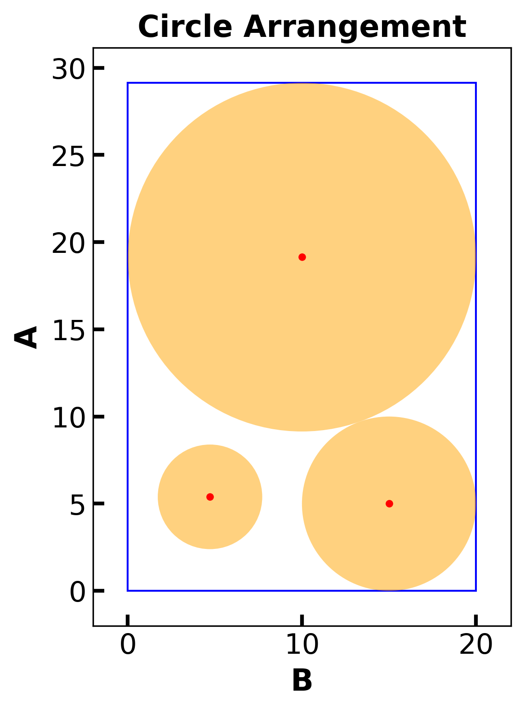
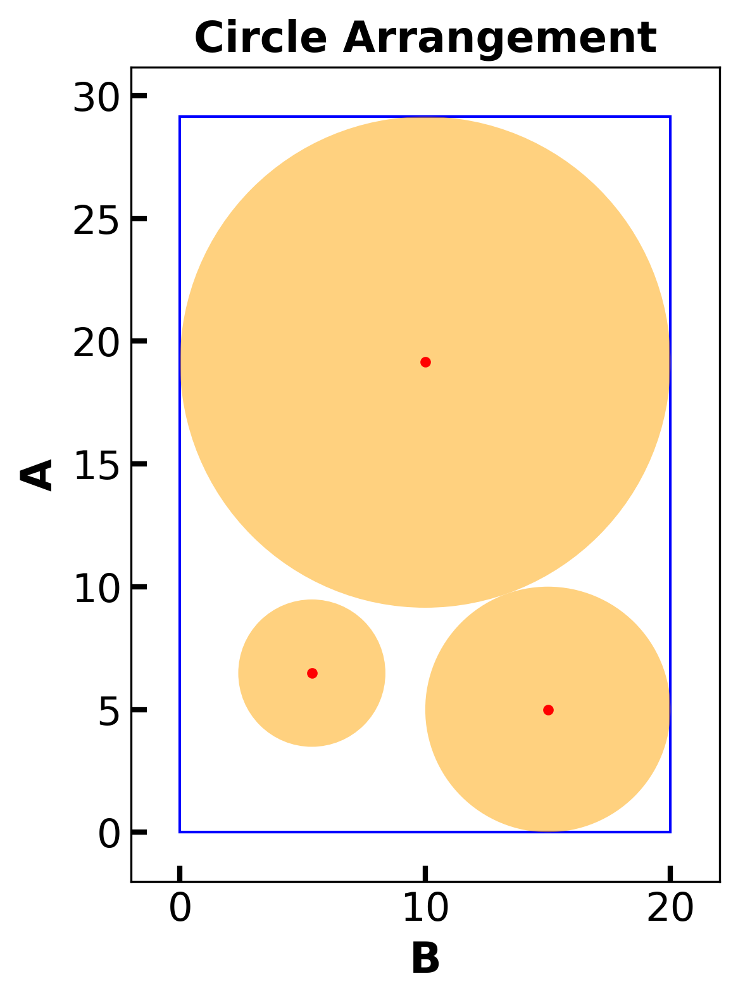
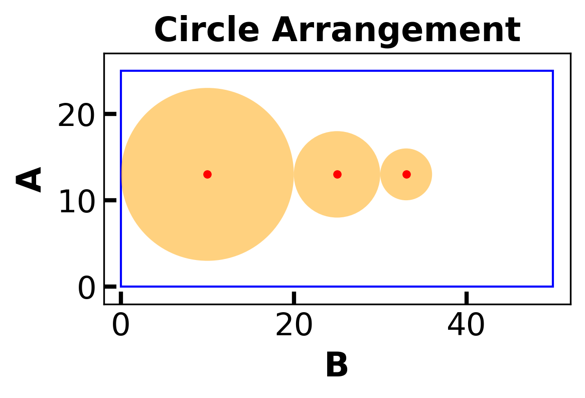
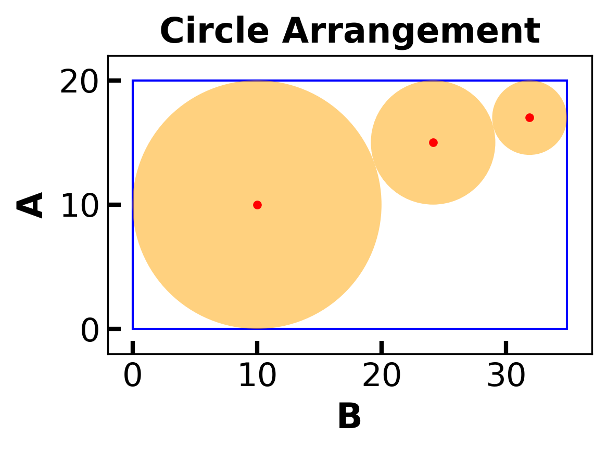
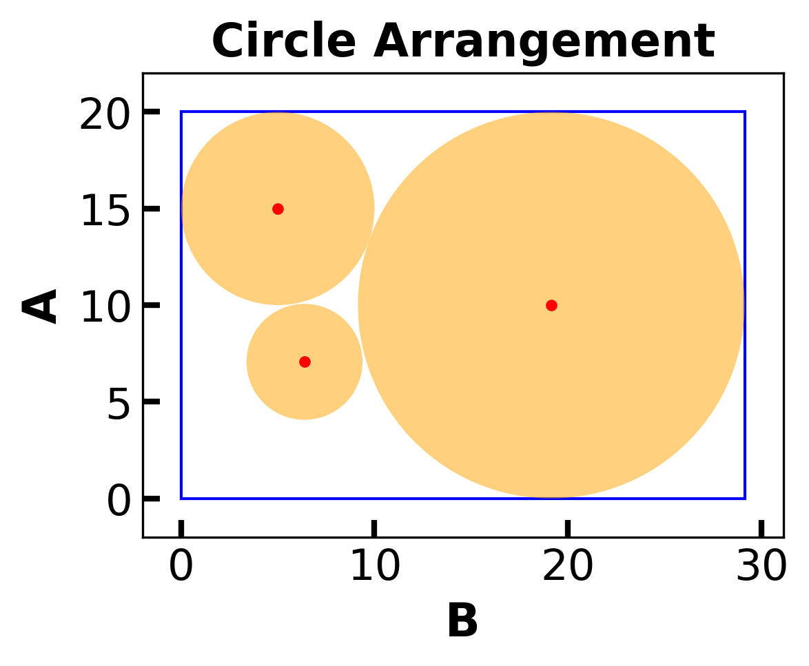

<!DOCTYPE html>


<html lang="en" data-content_root="../../" >

  <head>
    <meta charset="utf-8" />
    <meta name="viewport" content="width=device-width, initial-scale=1.0" /><meta name="viewport" content="width=device-width, initial-scale=1" />

    <title>Deterministic Global Optimization &#8212; Optimization for Decision Science</title>
  
  
  
  <script data-cfasync="false">
    document.documentElement.dataset.mode = localStorage.getItem("mode") || "";
    document.documentElement.dataset.theme = localStorage.getItem("theme") || "";
  </script>
  
  <!-- Loaded before other Sphinx assets -->
  <link href="../../_static/styles/theme.css?digest=dfe6caa3a7d634c4db9b" rel="stylesheet" />
<link href="../../_static/styles/bootstrap.css?digest=dfe6caa3a7d634c4db9b" rel="stylesheet" />
<link href="../../_static/styles/pydata-sphinx-theme.css?digest=dfe6caa3a7d634c4db9b" rel="stylesheet" />

  
  <link href="../../_static/vendor/fontawesome/6.5.2/css/all.min.css?digest=dfe6caa3a7d634c4db9b" rel="stylesheet" />
  <link rel="preload" as="font" type="font/woff2" crossorigin href="../../_static/vendor/fontawesome/6.5.2/webfonts/fa-solid-900.woff2" />
<link rel="preload" as="font" type="font/woff2" crossorigin href="../../_static/vendor/fontawesome/6.5.2/webfonts/fa-brands-400.woff2" />
<link rel="preload" as="font" type="font/woff2" crossorigin href="../../_static/vendor/fontawesome/6.5.2/webfonts/fa-regular-400.woff2" />

    <link rel="stylesheet" type="text/css" href="../../_static/pygments.css?v=03e43079" />
    <link rel="stylesheet" type="text/css" href="../../_static/styles/sphinx-book-theme.css?v=eba8b062" />
    <link rel="stylesheet" type="text/css" href="../../_static/togglebutton.css?v=13237357" />
    <link rel="stylesheet" type="text/css" href="../../_static/copybutton.css?v=76b2166b" />
    <link rel="stylesheet" type="text/css" href="../../_static/mystnb.4510f1fc1dee50b3e5859aac5469c37c29e427902b24a333a5f9fcb2f0b3ac41.css" />
    <link rel="stylesheet" type="text/css" href="../../_static/sphinx-thebe.css?v=4fa983c6" />
    <link rel="stylesheet" type="text/css" href="../../_static/sphinx-design.min.css?v=95c83b7e" />
  
  <!-- Pre-loaded scripts that we'll load fully later -->
  <link rel="preload" as="script" href="../../_static/scripts/bootstrap.js?digest=dfe6caa3a7d634c4db9b" />
<link rel="preload" as="script" href="../../_static/scripts/pydata-sphinx-theme.js?digest=dfe6caa3a7d634c4db9b" />
  <script src="../../_static/vendor/fontawesome/6.5.2/js/all.min.js?digest=dfe6caa3a7d634c4db9b"></script>

    <script src="../../_static/documentation_options.js?v=9eb32ce0"></script>
    <script src="../../_static/doctools.js?v=9a2dae69"></script>
    <script src="../../_static/sphinx_highlight.js?v=dc90522c"></script>
    <script src="../../_static/clipboard.min.js?v=a7894cd8"></script>
    <script src="../../_static/copybutton.js?v=f281be69"></script>
    <script src="../../_static/scripts/sphinx-book-theme.js?v=887ef09a"></script>
    <script>let toggleHintShow = 'Click to show';</script>
    <script>let toggleHintHide = 'Click to hide';</script>
    <script>let toggleOpenOnPrint = 'true';</script>
    <script src="../../_static/togglebutton.js?v=4a39c7ea"></script>
    <script>var togglebuttonSelector = '.toggle, .admonition.dropdown';</script>
    <script src="../../_static/design-tabs.js?v=f930bc37"></script>
    <script>const THEBE_JS_URL = "https://unpkg.com/thebe@0.8.2/lib/index.js"; const thebe_selector = ".thebe,.cell"; const thebe_selector_input = "pre"; const thebe_selector_output = ".output, .cell_output"</script>
    <script async="async" src="../../_static/sphinx-thebe.js?v=c100c467"></script>
    <script>var togglebuttonSelector = '.toggle, .admonition.dropdown';</script>
    <script>const THEBE_JS_URL = "https://unpkg.com/thebe@0.8.2/lib/index.js"; const thebe_selector = ".thebe,.cell"; const thebe_selector_input = "pre"; const thebe_selector_output = ".output, .cell_output"</script>
    <script>window.MathJax = {"options": {"processHtmlClass": "tex2jax_process|mathjax_process|math|output_area"}}</script>
    <script defer="defer" src="https://cdn.jsdelivr.net/npm/mathjax@3/es5/tex-mml-chtml.js"></script>
    <script>DOCUMENTATION_OPTIONS.pagename = 'notebooks/contrib/Deterministic_Global_Optimization';</script>
    <link rel="index" title="Index" href="../../genindex.html" />
    <link rel="search" title="Search" href="../../search.html" />
    <link rel="next" title="Bayesian Optimization Tutorial 1" href="Bayesian_Optimization1.html" />
    <link rel="prev" title="Global Optimization" href="algorithms.html" />
  <meta name="viewport" content="width=device-width, initial-scale=1"/>
  <meta name="docsearch:language" content="en"/>
  </head>
  
  
  <body data-bs-spy="scroll" data-bs-target=".bd-toc-nav" data-offset="180" data-bs-root-margin="0px 0px -60%" data-default-mode="">

  
  
  <div id="pst-skip-link" class="skip-link d-print-none"><a href="#main-content">Skip to main content</a></div>
  
  <div id="pst-scroll-pixel-helper"></div>
  
  <button type="button" class="btn rounded-pill" id="pst-back-to-top">
    <i class="fa-solid fa-arrow-up"></i>Back to top</button>

  
  <input type="checkbox"
          class="sidebar-toggle"
          id="pst-primary-sidebar-checkbox"/>
  <label class="overlay overlay-primary" for="pst-primary-sidebar-checkbox"></label>
  
  <input type="checkbox"
          class="sidebar-toggle"
          id="pst-secondary-sidebar-checkbox"/>
  <label class="overlay overlay-secondary" for="pst-secondary-sidebar-checkbox"></label>
  
  <div class="search-button__wrapper">
    <div class="search-button__overlay"></div>
    <div class="search-button__search-container">
<form class="bd-search d-flex align-items-center"
      action="../../search.html"
      method="get">
  <i class="fa-solid fa-magnifying-glass"></i>
  <input type="search"
         class="form-control"
         name="q"
         id="search-input"
         placeholder="Search this book..."
         aria-label="Search this book..."
         autocomplete="off"
         autocorrect="off"
         autocapitalize="off"
         spellcheck="false"/>
  <span class="search-button__kbd-shortcut"><kbd class="kbd-shortcut__modifier">Ctrl</kbd>+<kbd>K</kbd></span>
</form></div>
  </div>

  <div class="pst-async-banner-revealer d-none">
  <aside id="bd-header-version-warning" class="d-none d-print-none" aria-label="Version warning"></aside>
</div>

  
    <header class="bd-header navbar navbar-expand-lg bd-navbar d-print-none">
    </header>
  

  <div class="bd-container">
    <div class="bd-container__inner bd-page-width">
      
      
      
      <div class="bd-sidebar-primary bd-sidebar">
        

  
  <div class="sidebar-header-items sidebar-primary__section">
    
    
    
    
  </div>
  
    <div class="sidebar-primary-items__start sidebar-primary__section">
        <div class="sidebar-primary-item">

  
    
  

<a class="navbar-brand logo" href="../../intro.html">
  
  
  
  
  
    
    
      
    
    
    
    <script>document.write(``);</script>
  
  
</a></div>
        <div class="sidebar-primary-item">

 <script>
 document.write(`
   <button class="btn search-button-field search-button__button" title="Search" aria-label="Search" data-bs-placement="bottom" data-bs-toggle="tooltip">
    <i class="fa-solid fa-magnifying-glass"></i>
    <span class="search-button__default-text">Search</span>
    <span class="search-button__kbd-shortcut"><kbd class="kbd-shortcut__modifier">Ctrl</kbd>+<kbd class="kbd-shortcut__modifier">K</kbd></span>
   </button>
 `);
 </script></div>
        <div class="sidebar-primary-item"><nav class="bd-links bd-docs-nav" aria-label="Main">
    <div class="bd-toc-item navbar-nav active">
        
        <ul class="nav bd-sidenav bd-sidenav__home-link">
            <li class="toctree-l1">
                <a class="reference internal" href="../../intro.html">
                    Optimization for Decision Science
                </a>
            </li>
        </ul>
        <p aria-level="2" class="caption" role="heading"><span class="caption-text">Organization</span></p>
<ul class="nav bd-sidenav">
<li class="toctree-l1 has-children"><a class="reference internal" href="../../org/intro.html">Welcome</a><details><summary><span class="toctree-toggle" role="presentation"><i class="fa-solid fa-chevron-down"></i></span></summary><ul>
<li class="toctree-l2"><a class="reference internal" href="../../org/syllabus.html">Syllabus</a></li>
<li class="toctree-l2"><a class="reference internal" href="../../org/calendar.html">Fall 2024 Calendar</a></li>
<li class="toctree-l2"><a class="reference internal" href="../../org/contribute.html">Contribution Instructions</a></li>
<li class="toctree-l2"><a class="reference internal" href="../../org/workshop.html">Computational Optimization in Python (São Paulo, Brazil)</a></li>
</ul>
</details></li>
<li class="toctree-l1 has-children"><a class="reference internal" href="../../org/assignments.html">Assignments</a><details><summary><span class="toctree-toggle" role="presentation"><i class="fa-solid fa-chevron-down"></i></span></summary><ul>
<li class="toctree-l2"><a class="reference internal" href="../assignments/Pyomo1.html">Pyomo Homework 1</a></li>
<li class="toctree-l2"><a class="reference internal" href="../assignments/Pyomo2.html">Pyomo Homework 2</a></li>
<li class="toctree-l2"><a class="reference internal" href="../assignments/Pyomo3.html">Pyomo Homework 3</a></li>
<li class="toctree-l2"><a class="reference internal" href="../../org/project1.html">Project 1</a></li>
<li class="toctree-l2"><a class="reference internal" href="../assignments/Algorithms1.html">Algorithms Homework 1</a></li>
<li class="toctree-l2"><a class="reference internal" href="../assignments/Algorithms2.html">Algorithms Homework 2</a></li>
<li class="toctree-l2"><a class="reference internal" href="../../org/project2.html">Project 2</a></li>
<li class="toctree-l2"><a class="reference internal" href="../assignments/Algorithms3.html">Algorithms Homework 3</a></li>
<li class="toctree-l2"><a class="reference internal" href="../assignments/Algorithms4.html">Algorithms Homework 4</a></li>
</ul>
</details></li>
<li class="toctree-l1 has-children"><a class="reference internal" href="../../org/archive.html">Archive</a><details><summary><span class="toctree-toggle" role="presentation"><i class="fa-solid fa-chevron-down"></i></span></summary><ul>
<li class="toctree-l2"><a class="reference internal" href="../assignments/Pyomo-Mini-Project.html">Pyomo Mini-Project: Receding Horizon Stochastic Control</a></li>
<li class="toctree-l2"><a class="reference internal" href="../../org/semester_project.html">Semester Project (Spring 2023)</a></li>
</ul>
</details></li>
</ul>
<p aria-level="2" class="caption" role="heading"><span class="caption-text">Optimization Modeling in Pyomo</span></p>
<ul class="nav bd-sidenav">
<li class="toctree-l1 has-children"><a class="reference internal" href="../1/getting-started.html">1. Getting Started with Pyomo</a><details><summary><span class="toctree-toggle" role="presentation"><i class="fa-solid fa-chevron-down"></i></span></summary><ul>
<li class="toctree-l2"><a class="reference internal" href="../1/Local-Install.html">1.1. Local Installation</a></li>
<li class="toctree-l2"><a class="reference internal" href="../1/Optimization-Modeling.html">1.2. Optimization Modeling with Applications</a></li>
<li class="toctree-l2"><a class="reference internal" href="../1/Pyomo-Introduction.html">1.3. Your First Optimization Problem</a></li>
<li class="toctree-l2"><a class="reference internal" href="../1/LP.html">1.4. Continuous Optimization: Linear Programming</a></li>
<li class="toctree-l2"><a class="reference internal" href="../1/NLP.html">1.5. Continuous Optimization: Nonlinear Programming</a></li>
<li class="toctree-l2"><a class="reference internal" href="../1/IP.html">1.6. Integer Programs</a></li>
<li class="toctree-l2"><a class="reference internal" href="../1/Pyomo-Nuts-and-Bolts.html">1.7. 60 Minutes to Pyomo: An Energy Storage Model Predictive Control Example</a></li>
</ul>
</details></li>
<li class="toctree-l1 has-children"><a class="reference internal" href="../2/logic.html">2. Logical Modeling</a><details><summary><span class="toctree-toggle" role="presentation"><i class="fa-solid fa-chevron-down"></i></span></summary><ul>
<li class="toctree-l2"><a class="reference internal" href="../2/Logical_Modeling_GDP.html">2.1. Logical Modeling and Generalized Disjunctive Programs</a></li>
<li class="toctree-l2"><a class="reference internal" href="../2/Modeling_Disjunctions_Strip_Packing.html">2.2. Modeling Disjunctions through the Strip Packing Problem</a></li>
</ul>
</details></li>
<li class="toctree-l1 has-children"><a class="reference internal" href="../3/dynamics.html">3. Dynamic Optimization</a><details><summary><span class="toctree-toggle" role="presentation"><i class="fa-solid fa-chevron-down"></i></span></summary><ul>
<li class="toctree-l2"><a class="reference internal" href="../3/PyomoDAE_car.html">3.1. Pyomo.DAE Example: Race Car</a></li>
<li class="toctree-l2"><a class="reference internal" href="../3/PyomoDAE_TCLab.html">3.2. Pyomo.DAE Example: Temperature Control Lab</a></li>
<li class="toctree-l2"><a class="reference internal" href="../3/DAE_background.html">3.3. Differential Algebraic Equations (DAEs)</a></li>
<li class="toctree-l2"><a class="reference internal" href="../3/DAE_numeric_integration.html">3.4. Numeric Integration for DAEs</a></li>
<li class="toctree-l2"><a class="reference internal" href="../3/PyomoDAE_theory.html">3.5. Dynamic Optimization with Collocation and Pyomo.DAE</a></li>
<li class="toctree-l2"><a class="reference internal" href="../3/PyomoDAE_example.html">3.6. Pyomo.DAE: Racing Example Revisited</a></li>
</ul>
</details></li>
<li class="toctree-l1 has-children"><a class="reference internal" href="../4/uncertainty.html">4. Optimization Under Uncertainty</a><details><summary><span class="toctree-toggle" role="presentation"><i class="fa-solid fa-chevron-down"></i></span></summary><ul>
<li class="toctree-l2"><a class="reference internal" href="../4/SP.html">4.1. Stochastic Programming</a></li>
<li class="toctree-l2"><a class="reference internal" href="../4/blocks.html">4.2. Blocks and Other Pyomo Best Practices</a></li>
<li class="toctree-l2"><a class="reference internal" href="../4/AdvancedTopics.html">4.3. Advanced Topics in Stochastic Programming</a></li>
<li class="toctree-l2"><a class="reference internal" href="../4/RiskMeasures.html">4.4. Risk Measures and Portfolio Optimization</a></li>
</ul>
</details></li>
<li class="toctree-l1 has-children"><a class="reference internal" href="../5/data.html">5. Data Science and Applied Statistics</a><details><summary><span class="toctree-toggle" role="presentation"><i class="fa-solid fa-chevron-down"></i></span></summary><ul>
<li class="toctree-l2"><a class="reference internal" href="../5/Parmest-tutorial.html">5.1. Parameter estimation with <code class="docutils literal notranslate"><span class="pre">parmest</span></code></a></li>
<li class="toctree-l2"><a class="reference internal" href="../5/Parmest-generate-data.html">5.2. Supplementary material: data for parmest tutorial</a></li>
<li class="toctree-l2"><a class="reference internal" href="../5/Pyomo_DoE_Tutorial.html">5.3. Optimizing Experiments with <code class="docutils literal notranslate"><span class="pre">Pyomo.DoE</span></code></a></li>
</ul>
</details></li>
</ul>
<p aria-level="2" class="caption" role="heading"><span class="caption-text">Algorithms and Theory</span></p>
<ul class="nav bd-sidenav">
<li class="toctree-l1 has-children"><a class="reference internal" href="../6/unconstrained.html">6. Unconstrained Nonlinear Optimization</a><details><summary><span class="toctree-toggle" role="presentation"><i class="fa-solid fa-chevron-down"></i></span></summary><ul>
<li class="toctree-l2"><a class="reference internal" href="../6/Math-Primer-1.html">6.1. Linear Algebra Review and SciPy Basics</a></li>
<li class="toctree-l2"><a class="reference internal" href="../6/Math-Primer-2.html">6.2. Mathematics Primer</a></li>
<li class="toctree-l2"><a class="reference internal" href="../6/Optimality.html">6.3. Unconstrained Optimality Conditions</a></li>
<li class="toctree-l2"><a class="reference internal" href="../6/Newton-Methods.html">6.4. Newton-type Methods for Unconstrained Optimization</a></li>
<li class="toctree-l2"><a class="reference internal" href="../6/Quasi-Newton-Methods.html">6.5. Quasi-Newton Methods for Unconstrained Optimization</a></li>
<li class="toctree-l2"><a class="reference internal" href="../6/Globalization.html">6.6. Descent and Globalization</a></li>
</ul>
</details></li>
<li class="toctree-l1 has-children"><a class="reference internal" href="../7/constrained.html">7. Constrained Nonlinear Optimization</a><details><summary><span class="toctree-toggle" role="presentation"><i class="fa-solid fa-chevron-down"></i></span></summary><ul>
<li class="toctree-l2"><a class="reference internal" href="../7/Convexity.html">7.1. Convexity Revisited</a></li>
<li class="toctree-l2"><a class="reference internal" href="../7/Local-Optimality.html">7.2. Local Optimality Conditions</a></li>
<li class="toctree-l2"><a class="reference internal" href="../7/KKT-Multipliers.html">7.3. Analysis of KKT Conditions</a></li>
<li class="toctree-l2"><a class="reference internal" href="../7/Constraint-Qualifications.html">7.4. Constraint Qualifications</a></li>
<li class="toctree-l2"><a class="reference internal" href="../7/Second-Order.html">7.5. Second Order Optimality Conditions</a></li>
<li class="toctree-l2"><a class="reference internal" href="../7/degeneracy_hunter.html">7.6. NLP Diagnostics with Degeneracy Hunter</a></li>
<li class="toctree-l2"><a class="reference internal" href="../7/Interior-Point1.html">7.7. Simple Netwon Method for Equality Constrained NLPs</a></li>
<li class="toctree-l2"><a class="reference internal" href="../7/Interior-Point2.html">7.8. Inertia-Corrected Netwon Method for Equality Constrained NLPs</a></li>
</ul>
</details></li>
<li class="toctree-l1 has-children"><a class="reference internal" href="../8/special-topics.html">8. Special Topics</a><details><summary><span class="toctree-toggle" role="presentation"><i class="fa-solid fa-chevron-down"></i></span></summary><ul>
<li class="toctree-l2"><a class="reference internal" href="../8/MILP.html">8.1. Integer Programming with Simple Branch and Bound</a></li>
<li class="toctree-l2"><a class="reference internal" href="../8/MINLP-Algorithms.html">8.2. MINLP Algorithms</a></li>
<li class="toctree-l2"><a class="reference internal" href="../8/Global-Opt.html">8.3. Deterministic Global Optimization</a></li>
</ul>
</details></li>
</ul>
<p aria-level="2" class="caption" role="heading"><span class="caption-text">Student Contributions</span></p>
<ul class="current nav bd-sidenav">
<li class="toctree-l1 has-children"><a class="reference internal" href="pyomo.html">More Pyomo Examples</a><details><summary><span class="toctree-toggle" role="presentation"><i class="fa-solid fa-chevron-down"></i></span></summary><ul>
<li class="toctree-l2"><a class="reference internal" href="semiconductor_manufacturing.html">Semiconductor Production Planning</a></li>
<li class="toctree-l2"><a class="reference internal" href="student_diet.html">Optimization of Daily Diet Using Pyomo</a></li>
<li class="toctree-l2"><a class="reference internal" href="blending.html">Blending Under Uncertainty</a></li>
<li class="toctree-l2"><a class="reference internal" href="vehicle_routing.html">Vehicle Routing</a></li>

<li class="toctree-l2"><a class="reference internal" href="portfolio_optimization_extended.html">Risk Measures and Portfolio Optimization: Expanded</a></li>
<li class="toctree-l2"><a class="reference internal" href="race_car_extended.html">Extended Race Car Optimization Models</a></li>
<li class="toctree-l2"><a class="reference internal" href="hot_air_balloon.html">Hot Air Balloon Dynamic Control</a></li>
<li class="toctree-l2"><a class="reference internal" href="reactor_design.html">Chemical Reactor Design</a></li>
<li class="toctree-l2"><a class="reference internal" href="Disaster_Response_Plan.html">Disaster Response Plan Optimization</a></li>
<li class="toctree-l2"><a class="reference internal" href="Sudoku_Solver.html">Sudoku Solver</a></li>
<li class="toctree-l2"><a class="reference internal" href="more_circle_packing.html">Circle Packing Optimization</a></li>
</ul>
</details></li>
<li class="toctree-l1 has-children"><a class="reference internal" href="modeling.html">Modeling Paradigms</a><details><summary><span class="toctree-toggle" role="presentation"><i class="fa-solid fa-chevron-down"></i></span></summary><ul>
<li class="toctree-l2"><a class="reference internal" href="multi_objective.html">Multi-Objective Optimization</a></li>
<li class="toctree-l2"><a class="reference internal" href="advanced_stochastic_programming.html">Advanced Topics in Stochastic Programming</a></li>


</ul>
</details></li>
<li class="toctree-l1 current active has-children"><a class="reference internal" href="algorithms.html">Global Optimization</a><details open="open"><summary><span class="toctree-toggle" role="presentation"><i class="fa-solid fa-chevron-down"></i></span></summary><ul class="current">
<li class="toctree-l2 current active"><a class="current reference internal" href="#">Deterministic Global Optimization</a></li>
<li class="toctree-l2"><a class="reference internal" href="Bayesian_Optimization1.html">Bayesian Optimization Tutorial 1</a></li>
<li class="toctree-l2"><a class="reference internal" href="Bayesian_Optimization2.html">Bayesian Optimization Tutorial 2</a></li>
</ul>
</details></li>
<li class="toctree-l1 has-children"><a class="reference internal" href="sgd.html">Stochastic Gradient Descent</a><details><summary><span class="toctree-toggle" role="presentation"><i class="fa-solid fa-chevron-down"></i></span></summary><ul>
<li class="toctree-l2"><a class="reference internal" href="Stochastic-Gradient-Descent-1.html">Stochastic Gradient Descent Tutorial 1</a></li>
<li class="toctree-l2"><a class="reference internal" href="Stochastic-Gradient-Descent-2.html">Stochastic Gradient Descent Tutorial 2</a></li>


<li class="toctree-l2"><a class="reference internal" href="Stochastic-Gradient-Descent-3.html">Stochastic Gradient Descent Tutorial 3</a></li>
</ul>
</details></li>
<li class="toctree-l1 has-children"><a class="reference internal" href="data.html">Machine Learning and Applied Statistics</a><details><summary><span class="toctree-toggle" role="presentation"><i class="fa-solid fa-chevron-down"></i></span></summary><ul>
<li class="toctree-l2"><a class="reference internal" href="EM-MAP.html">Expectation Maximization Algorithm and MAP Estimation</a></li>
</ul>
</details></li>
</ul>

    </div>
</nav></div>
    </div>
  
  
  <div class="sidebar-primary-items__end sidebar-primary__section">
  </div>
  
  <div id="rtd-footer-container"></div>


      </div>
      
      <main id="main-content" class="bd-main" role="main">
        
        

<div class="sbt-scroll-pixel-helper"></div>

          <div class="bd-content">
            <div class="bd-article-container">
              
              <div class="bd-header-article d-print-none">
<div class="header-article-items header-article__inner">
  
    <div class="header-article-items__start">
      
        <div class="header-article-item"><button class="sidebar-toggle primary-toggle btn btn-sm" title="Toggle primary sidebar" data-bs-placement="bottom" data-bs-toggle="tooltip">
  <span class="fa-solid fa-bars"></span>
</button></div>
      
    </div>
  
  
    <div class="header-article-items__end">
      
        <div class="header-article-item">

<div class="article-header-buttons">


<div class="dropdown dropdown-launch-buttons">
  <button class="btn dropdown-toggle" type="button" data-bs-toggle="dropdown" aria-expanded="false" aria-label="Launch interactive content">
    <i class="fas fa-rocket"></i>
  </button>
  <ul class="dropdown-menu">
      
      
      
      <li><a href="https://colab.research.google.com/github/ndcbe/optimization/blob/master/notebooks/contrib/Deterministic_Global_Optimization.ipynb" target="_blank"
   class="btn btn-sm dropdown-item"
   title="Launch on Colab"
   data-bs-placement="left" data-bs-toggle="tooltip"
>
  

<span class="btn__icon-container">
  
    
  </span>
<span class="btn__text-container">Colab</span>
</a>
</li>
      
  </ul>
</div>


<div class="dropdown dropdown-source-buttons">
  <button class="btn dropdown-toggle" type="button" data-bs-toggle="dropdown" aria-expanded="false" aria-label="Source repositories">
    <i class="fab fa-github"></i>
  </button>
  <ul class="dropdown-menu">
      
      
      
      <li><a href="https://github.com/ndcbe/optimization" target="_blank"
   class="btn btn-sm btn-source-repository-button dropdown-item"
   title="Source repository"
   data-bs-placement="left" data-bs-toggle="tooltip"
>
  

<span class="btn__icon-container">
  <i class="fab fa-github"></i>
  </span>
<span class="btn__text-container">Repository</span>
</a>
</li>
      
      
      
      
      <li><a href="https://github.com/ndcbe/optimization/issues/new?title=Issue%20on%20page%20%2Fnotebooks/contrib/Deterministic_Global_Optimization.html&body=Your%20issue%20content%20here." target="_blank"
   class="btn btn-sm btn-source-issues-button dropdown-item"
   title="Open an issue"
   data-bs-placement="left" data-bs-toggle="tooltip"
>
  

<span class="btn__icon-container">
  <i class="fas fa-lightbulb"></i>
  </span>
<span class="btn__text-container">Open issue</span>
</a>
</li>
      
  </ul>
</div>


<div class="dropdown dropdown-download-buttons">
  <button class="btn dropdown-toggle" type="button" data-bs-toggle="dropdown" aria-expanded="false" aria-label="Download this page">
    <i class="fas fa-download"></i>
  </button>
  <ul class="dropdown-menu">
      
      
      
      <li><a href="../../_sources/notebooks/contrib/Deterministic_Global_Optimization.ipynb" target="_blank"
   class="btn btn-sm btn-download-source-button dropdown-item"
   title="Download source file"
   data-bs-placement="left" data-bs-toggle="tooltip"
>
  

<span class="btn__icon-container">
  <i class="fas fa-file"></i>
  </span>
<span class="btn__text-container">.ipynb</span>
</a>
</li>
      
      
      
      
      <li>
<button onclick="window.print()"
  class="btn btn-sm btn-download-pdf-button dropdown-item"
  title="Print to PDF"
  data-bs-placement="left" data-bs-toggle="tooltip"
>
  

<span class="btn__icon-container">
  <i class="fas fa-file-pdf"></i>
  </span>
<span class="btn__text-container">.pdf</span>
</button>
</li>
      
  </ul>
</div>


<button onclick="toggleFullScreen()"
  class="btn btn-sm btn-fullscreen-button"
  title="Fullscreen mode"
  data-bs-placement="bottom" data-bs-toggle="tooltip"
>
  

<span class="btn__icon-container">
  <i class="fas fa-expand"></i>
  </span>

</button>


<script>
document.write(`
  <button class="btn btn-sm nav-link pst-navbar-icon theme-switch-button" title="light/dark" aria-label="light/dark" data-bs-placement="bottom" data-bs-toggle="tooltip">
    <i class="theme-switch fa-solid fa-sun fa-lg" data-mode="light"></i>
    <i class="theme-switch fa-solid fa-moon fa-lg" data-mode="dark"></i>
    <i class="theme-switch fa-solid fa-circle-half-stroke fa-lg" data-mode="auto"></i>
  </button>
`);
</script>


<script>
document.write(`
  <button class="btn btn-sm pst-navbar-icon search-button search-button__button" title="Search" aria-label="Search" data-bs-placement="bottom" data-bs-toggle="tooltip">
    <i class="fa-solid fa-magnifying-glass fa-lg"></i>
  </button>
`);
</script>
<button class="sidebar-toggle secondary-toggle btn btn-sm" title="Toggle secondary sidebar" data-bs-placement="bottom" data-bs-toggle="tooltip">
    <span class="fa-solid fa-list"></span>
</button>
</div></div>
      
    </div>
  
</div>
</div>
              
              

<div id="jb-print-docs-body" class="onlyprint">
    <h1>Deterministic Global Optimization</h1>
    <!-- Table of contents -->
    <div id="print-main-content">
        <div id="jb-print-toc">
            
            <div>
                <h2> Contents </h2>
            </div>
            <nav aria-label="Page">
                <ul class="visible nav section-nav flex-column">
<li class="toc-h2 nav-item toc-entry"><a class="reference internal nav-link" href="#learning-objectives">Learning Objectives</a></li>
<li class="toc-h2 nav-item toc-entry"><a class="reference internal nav-link" href="#introduction">Introduction</a></li>
<li class="toc-h2 nav-item toc-entry"><a class="reference internal nav-link" href="#global-optimization">Global Optimization</a></li>
<li class="toc-h2 nav-item toc-entry"><a class="reference internal nav-link" href="#spatial-branch-and-bound-algorithm">Spatial Branch and Bound Algorithm</a></li>
<li class="toc-h2 nav-item toc-entry"><a class="reference internal nav-link" href="#circle-packing-example-revisited">Circle Packing Example Revisited</a><ul class="nav section-nav flex-column">
<li class="toc-h3 nav-item toc-entry"><a class="reference internal nav-link" href="#propose-an-optimization-model">Propose an Optimization Model</a></li>
<li class="toc-h3 nav-item toc-entry"><a class="reference internal nav-link" href="#implement-in-pyomo">Implement in Pyomo</a></li>
<li class="toc-h3 nav-item toc-entry"><a class="reference internal nav-link" href="#visualize-initial-point">Visualize Initial Point</a></li>
<li class="toc-h3 nav-item toc-entry"><a class="reference internal nav-link" href="#solve-and-inspect-the-solution">Solve and Inspect the Solution</a></li>
<li class="toc-h3 nav-item toc-entry"><a class="reference internal nav-link" href="#take-away-messages">Take Away Messages</a></li>
</ul>
</li>
<li class="toc-h2 nav-item toc-entry"><a class="reference internal nav-link" href="#deterministic-global-optimization-solvers">Deterministic global optimization solvers</a><ul class="nav section-nav flex-column">
<li class="toc-h3 nav-item toc-entry"><a class="reference internal nav-link" href="#couenne-solver">Couenne Solver</a></li>
<li class="toc-h3 nav-item toc-entry"><a class="reference internal nav-link" href="#baron-solver-via-neos-server">BARON Solver (via NEOS Server)</a></li>
<li class="toc-h3 nav-item toc-entry"><a class="reference internal nav-link" href="#reinitialize">Reinitialize</a></li>
<li class="toc-h3 nav-item toc-entry"><a class="reference internal nav-link" href="#solve-with-ipopt">Solve with IPOPT</a></li>
<li class="toc-h3 nav-item toc-entry"><a class="reference internal nav-link" href="#solve-with-couenne">Solve with Couenne</a></li>
<li class="toc-h3 nav-item toc-entry"><a class="reference internal nav-link" href="#solve-with-baron">Solve with Baron</a></li>
</ul>
</li>
<li class="toc-h2 nav-item toc-entry"><a class="reference internal nav-link" href="#takeaway-messages">Takeaway Messages</a></li>
<li class="toc-h2 nav-item toc-entry"><a class="reference internal nav-link" href="#references">References</a></li>
</ul>
            </nav>
        </div>
    </div>
</div>

              
                
<div id="searchbox"></div>
                <article class="bd-article">
                  
  <section class="tex2jax_ignore mathjax_ignore" id="deterministic-global-optimization">
<h1>Deterministic Global Optimization<a class="headerlink" href="#deterministic-global-optimization" title="Link to this heading">#</a></h1>
<p>Prepared by: Yohannes Mariam (<a class="reference external" href="mailto:ymariam&#37;&#52;&#48;nd&#46;edu">ymariam<span>&#64;</span>nd<span>&#46;</span>edu</a>, <a class="reference external" href="https://github.com/ymariam1">ymariam1</a>, 2024) and Oliver Harris (<a class="reference external" href="mailto:oharris2&#37;&#52;&#48;nd&#46;edu">oharris2<span>&#64;</span>nd<span>&#46;</span>edu</a>, <a class="reference external" href="https://github.com/OliverHarris47">&#64;OliverHarris47</a>, 2024)</p>
<div class="cell docutils container">
<div class="cell_input docutils container">
<div class="highlight-ipython3 notranslate"><div class="highlight"><pre><span></span><span class="c1"># This code cell installs packages on Colab</span>

<span class="kn">import</span><span class="w"> </span><span class="nn">sys</span>
<span class="k">if</span> <span class="s2">&quot;google.colab&quot;</span> <span class="ow">in</span> <span class="n">sys</span><span class="o">.</span><span class="n">modules</span><span class="p">:</span>
    <span class="o">!</span>wget<span class="w"> </span><span class="s2">&quot;https://raw.githubusercontent.com/ndcbe/optimization/main/notebooks/helper.py&quot;</span>
    <span class="kn">import</span><span class="w"> </span><span class="nn">helper</span>
    <span class="n">helper</span><span class="o">.</span><span class="n">easy_install</span><span class="p">()</span>
<span class="k">else</span><span class="p">:</span>
    <span class="n">sys</span><span class="o">.</span><span class="n">path</span><span class="o">.</span><span class="n">insert</span><span class="p">(</span><span class="mi">0</span><span class="p">,</span> <span class="s1">&#39;../&#39;</span><span class="p">)</span>
    <span class="kn">import</span><span class="w"> </span><span class="nn">helper</span>
<span class="n">helper</span><span class="o">.</span><span class="n">set_plotting_style</span><span class="p">()</span>
</pre></div>
</div>
</div>
<div class="cell_output docutils container">
<div class="output stream highlight-myst-ansi notranslate"><div class="highlight"><pre><span></span>--2024-12-13 14:25:42--  https://raw.githubusercontent.com/ndcbe/optimization/main/notebooks/helper.py
Resolving raw.githubusercontent.com (raw.githubusercontent.com)... 185.199.108.133, 185.199.111.133, 185.199.109.133, ...
Connecting to raw.githubusercontent.com (raw.githubusercontent.com)|185.199.108.133|:443... connected.
HTTP request sent, awaiting response... 200 OK
Length: 6493 (6.3K) [text/plain]
Saving to: ‘helper.py’


helper.py             0%[                    ]       0  --.-KB/s               
helper.py           100%[===================&gt;]   6.34K  --.-KB/s    in 0s      

2024-12-13 14:25:42 (68.6 MB/s) - ‘helper.py’ saved [6493/6493]

Installing idaes via pip...
idaes was successfully installed
idaes, version 2.7.0


Running idaes get-extensions to install Ipopt, k_aug, and more...
Checking solver versions:
Ipopt 3.13.2 (x86_64-pc-linux-gnu), ASL(20190605)


[K_AUG] 0.1.0, Part of the IDAES PSE framework
Please visit https://idaes.org/ (x86_64-pc-linux-gnu), ASL(20190605)


Couenne 0.5.8 -- an Open-Source solver for Mixed Integer Nonlinear Optimization
Mailing list: couenne@list.coin-or.org
Instructions: http://www.coin-or.org/Couenne
couenne (x86_64-pc-linux-gnu), ASL(20190605)


Bonmin 1.8.8 using Cbc 2.10.10 and Ipopt 3.13.2
bonmin (x86_64-pc-linux-gnu), ASL(20190605)


Ipopt 3.13.3 (x86_64-pc-linux-gnu), ASL(20190605)


1.0 dot_1&#39; (x86_64-pc-linux-gnu), ASL(20190605)
</pre></div>
</div>
</div>
</div>
<div class="cell docutils container">
<div class="cell_input docutils container">
<div class="highlight-ipython3 notranslate"><div class="highlight"><pre><span></span><span class="kn">import</span><span class="w"> </span><span class="nn">pandas</span><span class="w"> </span><span class="k">as</span><span class="w"> </span><span class="nn">pd</span>
<span class="kn">import</span><span class="w"> </span><span class="nn">pyomo.environ</span><span class="w"> </span><span class="k">as</span><span class="w"> </span><span class="nn">pyo</span>
</pre></div>
</div>
</div>
</div>
<section id="learning-objectives">
<h2>Learning Objectives<a class="headerlink" href="#learning-objectives" title="Link to this heading">#</a></h2>
<ul class="simple">
<li><p>Review syntax and components in Pyomo</p></li>
<li><p>Become acquanted with global solvers in Pyomo</p></li>
<li><p>Learn to use the GAMS file writer and access the NEOS server</p></li>
<li><p>Gain an introduction into Deterministic Global Optimization Algorithms</p></li>
<li><p>Uncover neuance in nonlinear, nonconvex programming problems</p></li>
</ul>
</section>
<section id="introduction">
<h2>Introduction<a class="headerlink" href="#introduction" title="Link to this heading">#</a></h2>
<p>Global optimization (GO) focuses on finding the global minimum or maximum of an objective function over a feasible domain, often characterized by numerous local optima. Unlike local optimization, GO addresses challenges in problems where local minima do not also guarantee global optimality. Recent advancements in algorithms, complexity analysis, and computational tools have driven significant growth in the field. Applications span diverse areas, including molecular conformation, distance geometry, packing, and trajectory planning.</p>
<p>Complexity analysis is critical in GO, as it evaluates the inherent difficulty of optimization problems. This assessment helps determine whether exact solutions are feasible or if approximate methods must be employed. Heuristics, such as metaheuristic frameworks and function modeling, are commonly used to navigate the search space efficiently, especially when function evaluations are computationally expensive. Branch-and-bound techniques provide systematic frameworks for exact solutions by iteratively dividing the problem space and calculating bounds to eliminate suboptimal regions. Lower bound computation, often via convex relaxations, is integral to both exact (deterministic) and heuristic methods, offering guarantees on the quality of solutions and improving algorithmic</p>
<p>This notebook will focus on deterministic approaches to GO problems, particularly the ‘Spatial Branch and Bound’ algorithm and the BARON and Couenne solvers which take this approach. This method is valid under certain qualifying assumptions that are revealed in the complexity analysis of a GO problem. Additional reading for complexity analysis, heuristics, lower bound computation, and branch and bound methods can be found at:</p>
<p><a class="reference external" href="https://optimization.cbe.cornell.edu/index.php?title=Spatial_branch_and_bound_method">https://optimization.cbe.cornell.edu/index.php?title=Spatial_branch_and_bound_method</a></p>
<p><a class="reference external" href="https://epubs.siam.org/doi/book/10.1137/1.9781611972672">https://epubs.siam.org/doi/book/10.1137/1.9781611972672</a></p>
</section>
<section id="global-optimization">
<h2>Global Optimization<a class="headerlink" href="#global-optimization" title="Link to this heading">#</a></h2>
<ul class="simple">
<li><p>Given a function <span class="math notranslate nohighlight">\(f\)</span> how do we ensure that the optima we find is a global optima?</p></li>
<li><p>Do we have a method to solve optimization problems with nonlinear objects or constraints with poor initialization?</p></li>
</ul>
<p><strong>Review</strong></p>
<ul class="simple">
<li><p>Let <span class="math notranslate nohighlight">\(\mathcal{F}\)</span> be defined as the feasible region <span class="math notranslate nohighlight">\(\mathcal{F} = \{ x\mid g(x)\leq 0, h(x) = 0 \}\)</span></p></li>
<li><p>A point <span class="math notranslate nohighlight">\(x^*\)</span> is a <em><strong>global minimizer</strong></em> if <span class="math notranslate nohighlight">\(f(x^*) \leq f(x)\)</span> for all <span class="math notranslate nohighlight">\(x \in \mathcal{F}\)</span></p></li>
<li><p><strong>Theorem 4.3</strong> If <span class="math notranslate nohighlight">\(f(x) \)</span> is convex and <span class="math notranslate nohighlight">\( \mathcal{F} \)</span> is convex, then every local minimum in <span class="math notranslate nohighlight">\( \mathcal{F} \)</span> is a global minimum. If <span class="math notranslate nohighlight">\( f(x) \)</span> is strictly convex in <span class="math notranslate nohighlight">\( \mathcal{F} \)</span>, then a local minimum is the unique global minimum.</p></li>
</ul>
<p>(Biegler, 2010, Chapter 4)</p>
</section>
<section id="spatial-branch-and-bound-algorithm">
<h2>Spatial Branch and Bound Algorithm<a class="headerlink" href="#spatial-branch-and-bound-algorithm" title="Link to this heading">#</a></h2>
<p><strong>Main Idea:</strong> Spatial branch-and-bound is a divide-and-conquer technique for global optimization. It systematically partitions a problems feasible space into sub-spaces, computes bounds for solutions, and prunes infeasible regions.</p>
<p>Algorithm:</p>
<p></p>
<p>Figure source: <a class="reference external" href="https://optimization.cbe.cornell.edu/index.php?title=Spatial_branch_and_bound_method">https://optimization.cbe.cornell.edu/index.php?title=Spatial_branch_and_bound_method</a></p>
<p>Proof of convergence:</p>
<p>A branch-and-bound method that uses exact selection rules will eventually converge, because at each iteration it discards regions of the solution space that cannot contain a better solution than the current best one. The remaining “qualified” subregions always include the global optimum, ensuring that—given infinite time—the method will find it.</p>
<p><em>It is noted that the spacial branch and bound algorithm does not guarantee convergence in a finite number of steps</em></p>
<p></p>
<p>Figure source: <a class="reference external" href="https://optimization.cbe.cornell.edu/index.php?title=Spatial_branch_and_bound_method">https://optimization.cbe.cornell.edu/index.php?title=Spatial_branch_and_bound_method</a></p>
<p>Example:</p>
<p></p>
<p>Figure source: <a class="reference external" href="https://optimization.cbe.cornell.edu/index.php?title=Spatial_branch_and_bound_method">https://optimization.cbe.cornell.edu/index.php?title=Spatial_branch_and_bound_method</a></p>
</section>
<section id="circle-packing-example-revisited">
<h2>Circle Packing Example Revisited<a class="headerlink" href="#circle-packing-example-revisited" title="Link to this heading">#</a></h2>
<p>What is the smallest rectangle you can use to enclose three given circles? Reference: Example 4.4 in Biegler (2010).</p>
<p></p>
<section id="propose-an-optimization-model">
<h3>Propose an Optimization Model<a class="headerlink" href="#propose-an-optimization-model" title="Link to this heading">#</a></h3>
<p>The following optimization model is given in Biegler (2010):</p>
<div class="math notranslate nohighlight">
\[\begin{split}
\begin{align}
\text{min} \quad &amp; 2(A + B) \\
\text{s.t.} \quad &amp; A \geq 0, \quad B \geq 0, \\
&amp; x_1, y_1, \geq R_1, \quad x_1 \leq B - R_1, \quad y_1 \leq A - R_1, \\
&amp; x_2, y_2, \geq R_2, \quad x_2 \leq B - R_2, \quad y_2 \leq A - R_2, \\
&amp; x_3, y_3, \geq R_3, \quad x_3 \leq B - R_3, \quad y_3 \leq A - R_3, \\
&amp; (x_1 - x_2)^2 + (y_1 - y_2)^2 \geq (R_1 + R_2)^2, \\
&amp; (x_1 - x_3)^2 + (y_1 - y_3)^2 \geq (R_1 + R_3)^2, \\
&amp; (x_2 - x_3)^2 + (y_2 - y_3)^2 \geq (R_2 + R_3)^2,
\end{align}
\end{split}\]</div>
</section>
<section id="implement-in-pyomo">
<h3>Implement in Pyomo<a class="headerlink" href="#implement-in-pyomo" title="Link to this heading">#</a></h3>
<p>First, we will define functions to create and intialize the model.</p>
<div class="cell docutils container">
<div class="cell_input docutils container">
<div class="highlight-ipython3 notranslate"><div class="highlight"><pre><span></span><span class="kn">import</span><span class="w"> </span><span class="nn">random</span>
<span class="kn">import</span><span class="w"> </span><span class="nn">numpy</span><span class="w"> </span><span class="k">as</span><span class="w"> </span><span class="nn">np</span>
<span class="kn">import</span><span class="w"> </span><span class="nn">matplotlib.pyplot</span><span class="w"> </span><span class="k">as</span><span class="w"> </span><span class="nn">plt</span>
<span class="kn">import</span><span class="w"> </span><span class="nn">matplotlib.patches</span><span class="w"> </span><span class="k">as</span><span class="w"> </span><span class="nn">mpatches</span>

<span class="k">def</span><span class="w"> </span><span class="nf">create_circle_model</span><span class="p">(</span><span class="n">circle_radii</span><span class="p">):</span>
<span class="w">    </span><span class="sd">&#39;&#39;&#39; Create circle optimization model in Pyomo</span>

<span class="sd">    Arguments:</span>
<span class="sd">        circle_radii: dictionary with keys=circle name and value=radius (float)</span>

<span class="sd">    Returns:</span>
<span class="sd">        model: Pyomo model</span>
<span class="sd">    &#39;&#39;&#39;</span>

    <span class="c1"># Number of circles to consider</span>
    <span class="n">n</span> <span class="o">=</span> <span class="nb">len</span><span class="p">(</span><span class="n">circle_radii</span><span class="p">)</span>

    <span class="c1"># Create a concrete Pyomo model.</span>
    <span class="n">model</span> <span class="o">=</span> <span class="n">pyo</span><span class="o">.</span><span class="n">ConcreteModel</span><span class="p">()</span>

    <span class="c1"># Initialize index for circles</span>
    <span class="n">model</span><span class="o">.</span><span class="n">CIRCLES</span> <span class="o">=</span> <span class="n">pyo</span><span class="o">.</span><span class="n">Set</span><span class="p">(</span><span class="n">initialize</span> <span class="o">=</span> <span class="n">circle_radii</span><span class="o">.</span><span class="n">keys</span><span class="p">())</span>

    <span class="c1"># Create parameter</span>
    <span class="n">model</span><span class="o">.</span><span class="n">R</span> <span class="o">=</span> <span class="n">pyo</span><span class="o">.</span><span class="n">Param</span><span class="p">(</span><span class="n">model</span><span class="o">.</span><span class="n">CIRCLES</span><span class="p">,</span> <span class="n">domain</span><span class="o">=</span><span class="n">pyo</span><span class="o">.</span><span class="n">PositiveReals</span><span class="p">,</span> <span class="n">initialize</span><span class="o">=</span><span class="n">circle_radii</span><span class="p">)</span>

    <span class="c1"># Create variables for box</span>
    <span class="n">model</span><span class="o">.</span><span class="n">a</span> <span class="o">=</span> <span class="n">pyo</span><span class="o">.</span><span class="n">Var</span><span class="p">(</span><span class="n">domain</span><span class="o">=</span><span class="n">pyo</span><span class="o">.</span><span class="n">PositiveReals</span><span class="p">)</span>
    <span class="n">model</span><span class="o">.</span><span class="n">b</span> <span class="o">=</span> <span class="n">pyo</span><span class="o">.</span><span class="n">Var</span><span class="p">(</span><span class="n">domain</span><span class="o">=</span><span class="n">pyo</span><span class="o">.</span><span class="n">PositiveReals</span><span class="p">)</span>

    <span class="c1"># Set objective</span>
    <span class="n">model</span><span class="o">.</span><span class="n">obj</span> <span class="o">=</span> <span class="n">pyo</span><span class="o">.</span><span class="n">Objective</span><span class="p">(</span><span class="n">expr</span><span class="o">=</span><span class="mi">2</span><span class="o">*</span><span class="p">(</span><span class="n">model</span><span class="o">.</span><span class="n">a</span> <span class="o">+</span> <span class="n">model</span><span class="o">.</span><span class="n">b</span><span class="p">),</span> <span class="n">sense</span> <span class="o">=</span> <span class="n">pyo</span><span class="o">.</span><span class="n">minimize</span><span class="p">)</span>

    <span class="c1"># Create variables for circle centers</span>
    <span class="n">model</span><span class="o">.</span><span class="n">x</span> <span class="o">=</span> <span class="n">pyo</span><span class="o">.</span><span class="n">Var</span><span class="p">(</span><span class="n">model</span><span class="o">.</span><span class="n">CIRCLES</span><span class="p">,</span> <span class="n">domain</span><span class="o">=</span><span class="n">pyo</span><span class="o">.</span><span class="n">PositiveReals</span><span class="p">)</span>
    <span class="n">model</span><span class="o">.</span><span class="n">y</span> <span class="o">=</span> <span class="n">pyo</span><span class="o">.</span><span class="n">Var</span><span class="p">(</span><span class="n">model</span><span class="o">.</span><span class="n">CIRCLES</span><span class="p">,</span> <span class="n">domain</span><span class="o">=</span><span class="n">pyo</span><span class="o">.</span><span class="n">PositiveReals</span><span class="p">)</span>

    <span class="c1"># &quot;In the box&quot; constraints</span>
    <span class="k">def</span><span class="w"> </span><span class="nf">left_x</span><span class="p">(</span><span class="n">m</span><span class="p">,</span><span class="n">c</span><span class="p">):</span>
        <span class="k">return</span> <span class="n">m</span><span class="o">.</span><span class="n">x</span><span class="p">[</span><span class="n">c</span><span class="p">]</span> <span class="o">&gt;=</span> <span class="n">model</span><span class="o">.</span><span class="n">R</span><span class="p">[</span><span class="n">c</span><span class="p">]</span>
    <span class="n">model</span><span class="o">.</span><span class="n">left_x_con</span> <span class="o">=</span> <span class="n">pyo</span><span class="o">.</span><span class="n">Constraint</span><span class="p">(</span><span class="n">model</span><span class="o">.</span><span class="n">CIRCLES</span><span class="p">,</span> <span class="n">rule</span><span class="o">=</span><span class="n">left_x</span><span class="p">)</span>

    <span class="k">def</span><span class="w"> </span><span class="nf">left_y</span><span class="p">(</span><span class="n">m</span><span class="p">,</span><span class="n">c</span><span class="p">):</span>
        <span class="k">return</span> <span class="n">m</span><span class="o">.</span><span class="n">y</span><span class="p">[</span><span class="n">c</span><span class="p">]</span> <span class="o">&gt;=</span> <span class="n">model</span><span class="o">.</span><span class="n">R</span><span class="p">[</span><span class="n">c</span><span class="p">]</span>
    <span class="n">model</span><span class="o">.</span><span class="n">left_y_con</span> <span class="o">=</span> <span class="n">pyo</span><span class="o">.</span><span class="n">Constraint</span><span class="p">(</span><span class="n">model</span><span class="o">.</span><span class="n">CIRCLES</span><span class="p">,</span> <span class="n">rule</span><span class="o">=</span><span class="n">left_y</span><span class="p">)</span>

    <span class="k">def</span><span class="w"> </span><span class="nf">right_x</span><span class="p">(</span><span class="n">m</span><span class="p">,</span><span class="n">c</span><span class="p">):</span>
        <span class="k">return</span> <span class="n">m</span><span class="o">.</span><span class="n">x</span><span class="p">[</span><span class="n">c</span><span class="p">]</span> <span class="o">&lt;=</span> <span class="n">m</span><span class="o">.</span><span class="n">b</span> <span class="o">-</span> <span class="n">model</span><span class="o">.</span><span class="n">R</span><span class="p">[</span><span class="n">c</span><span class="p">]</span>
    <span class="n">model</span><span class="o">.</span><span class="n">right_x_con</span> <span class="o">=</span> <span class="n">pyo</span><span class="o">.</span><span class="n">Constraint</span><span class="p">(</span><span class="n">model</span><span class="o">.</span><span class="n">CIRCLES</span><span class="p">,</span> <span class="n">rule</span><span class="o">=</span><span class="n">right_x</span><span class="p">)</span>

    <span class="k">def</span><span class="w"> </span><span class="nf">right_y</span><span class="p">(</span><span class="n">m</span><span class="p">,</span><span class="n">c</span><span class="p">):</span>
        <span class="k">return</span> <span class="n">m</span><span class="o">.</span><span class="n">y</span><span class="p">[</span><span class="n">c</span><span class="p">]</span> <span class="o">&lt;=</span> <span class="n">m</span><span class="o">.</span><span class="n">a</span> <span class="o">-</span> <span class="n">model</span><span class="o">.</span><span class="n">R</span><span class="p">[</span><span class="n">c</span><span class="p">]</span>
    <span class="n">model</span><span class="o">.</span><span class="n">right_y_con</span> <span class="o">=</span> <span class="n">pyo</span><span class="o">.</span><span class="n">Constraint</span><span class="p">(</span><span class="n">model</span><span class="o">.</span><span class="n">CIRCLES</span><span class="p">,</span> <span class="n">rule</span><span class="o">=</span><span class="n">right_y</span><span class="p">)</span>

    <span class="c1"># No overlap constraints</span>
    <span class="k">def</span><span class="w"> </span><span class="nf">no_overlap</span><span class="p">(</span><span class="n">m</span><span class="p">,</span><span class="n">c1</span><span class="p">,</span><span class="n">c2</span><span class="p">):</span>
        <span class="k">if</span> <span class="n">c1</span> <span class="o">&lt;</span> <span class="n">c2</span><span class="p">:</span>
            <span class="k">return</span> <span class="p">(</span><span class="n">m</span><span class="o">.</span><span class="n">x</span><span class="p">[</span><span class="n">c1</span><span class="p">]</span> <span class="o">-</span> <span class="n">m</span><span class="o">.</span><span class="n">x</span><span class="p">[</span><span class="n">c2</span><span class="p">])</span><span class="o">**</span><span class="mi">2</span> <span class="o">+</span> <span class="p">(</span><span class="n">m</span><span class="o">.</span><span class="n">y</span><span class="p">[</span><span class="n">c1</span><span class="p">]</span> <span class="o">-</span> <span class="n">m</span><span class="o">.</span><span class="n">y</span><span class="p">[</span><span class="n">c2</span><span class="p">])</span><span class="o">**</span><span class="mi">2</span> <span class="o">&gt;=</span> <span class="p">(</span><span class="n">model</span><span class="o">.</span><span class="n">R</span><span class="p">[</span><span class="n">c1</span><span class="p">]</span> <span class="o">+</span> <span class="n">model</span><span class="o">.</span><span class="n">R</span><span class="p">[</span><span class="n">c2</span><span class="p">])</span><span class="o">**</span><span class="mi">2</span>
        <span class="k">else</span><span class="p">:</span>
            <span class="k">return</span> <span class="n">pyo</span><span class="o">.</span><span class="n">Constraint</span><span class="o">.</span><span class="n">Skip</span>
    <span class="n">model</span><span class="o">.</span><span class="n">no_overlap_con</span> <span class="o">=</span> <span class="n">pyo</span><span class="o">.</span><span class="n">Constraint</span><span class="p">(</span><span class="n">model</span><span class="o">.</span><span class="n">CIRCLES</span><span class="p">,</span> <span class="n">model</span><span class="o">.</span><span class="n">CIRCLES</span><span class="p">,</span> <span class="n">rule</span><span class="o">=</span><span class="n">no_overlap</span><span class="p">)</span>

    <span class="k">return</span> <span class="n">model</span>

<span class="k">def</span><span class="w"> </span><span class="nf">initialize_circle_model</span><span class="p">(</span><span class="n">model</span><span class="p">,</span> <span class="n">a_init</span><span class="o">=</span><span class="mi">25</span><span class="p">,</span> <span class="n">b_init</span><span class="o">=</span><span class="mi">25</span><span class="p">):</span>
<span class="w">    </span><span class="sd">&#39;&#39;&#39; Initialize the x and y coordinates using uniform distribution</span>

<span class="sd">    Arguments:</span>
<span class="sd">        a_init: initial value for a (default=25)</span>
<span class="sd">        b_init: initial value for b (default=25)</span>

<span class="sd">    Returns:</span>
<span class="sd">        Nothing. But per Pyomo scoping rules, the input argument `model`</span>
<span class="sd">        can be modified in this function.</span>

<span class="sd">    &#39;&#39;&#39;</span>
    <span class="c1"># Initialize</span>
    <span class="n">model</span><span class="o">.</span><span class="n">a</span> <span class="o">=</span> <span class="mi">25</span>
    <span class="n">model</span><span class="o">.</span><span class="n">b</span> <span class="o">=</span> <span class="mi">25</span>

    <span class="k">for</span> <span class="n">i</span> <span class="ow">in</span> <span class="n">model</span><span class="o">.</span><span class="n">CIRCLES</span><span class="p">:</span>
        <span class="c1"># Adding circle radii ensures the remains in the &gt;0, &gt;0 quadrant</span>
        <span class="n">model</span><span class="o">.</span><span class="n">x</span><span class="p">[</span><span class="n">i</span><span class="p">]</span> <span class="o">=</span> <span class="n">random</span><span class="o">.</span><span class="n">uniform</span><span class="p">(</span><span class="mi">0</span><span class="p">,</span><span class="mi">10</span><span class="p">)</span> <span class="o">+</span> <span class="n">model</span><span class="o">.</span><span class="n">R</span><span class="p">[</span><span class="n">i</span><span class="p">]</span>
        <span class="n">model</span><span class="o">.</span><span class="n">y</span><span class="p">[</span><span class="n">i</span><span class="p">]</span> <span class="o">=</span> <span class="n">random</span><span class="o">.</span><span class="n">uniform</span><span class="p">(</span><span class="mi">0</span><span class="p">,</span><span class="mi">10</span><span class="p">)</span> <span class="o">+</span> <span class="n">model</span><span class="o">.</span><span class="n">R</span><span class="p">[</span><span class="n">i</span><span class="p">]</span>
</pre></div>
</div>
</div>
</div>
<p>Next, we will create a dictionary containing the circle names and radii values.</p>
<div class="cell docutils container">
<div class="cell_input docutils container">
<div class="highlight-ipython3 notranslate"><div class="highlight"><pre><span></span><span class="c1"># Create dictionary with circle data</span>
<span class="n">circle_data</span> <span class="o">=</span> <span class="p">{</span><span class="s1">&#39;A&#39;</span><span class="p">:</span><span class="mf">10.0</span><span class="p">,</span> <span class="s1">&#39;B&#39;</span><span class="p">:</span><span class="mf">5.0</span><span class="p">,</span> <span class="s1">&#39;C&#39;</span><span class="p">:</span><span class="mf">3.0</span><span class="p">}</span>
<span class="n">circle_data</span>
</pre></div>
</div>
</div>
<div class="cell_output docutils container">
<div class="output text_plain highlight-myst-ansi notranslate"><div class="highlight"><pre><span></span>{&#39;A&#39;: 10.0, &#39;B&#39;: 5.0, &#39;C&#39;: 3.0}
</pre></div>
</div>
</div>
</div>
<div class="cell docutils container">
<div class="cell_input docutils container">
<div class="highlight-ipython3 notranslate"><div class="highlight"><pre><span></span><span class="c1"># Access the keys</span>
<span class="n">circle_data</span><span class="o">.</span><span class="n">keys</span><span class="p">()</span>
</pre></div>
</div>
</div>
<div class="cell_output docutils container">
<div class="output text_plain highlight-myst-ansi notranslate"><div class="highlight"><pre><span></span>dict_keys([&#39;A&#39;, &#39;B&#39;, &#39;C&#39;])
</pre></div>
</div>
</div>
</div>
<p>Now let’s create the model.</p>
<div class="cell docutils container">
<div class="cell_input docutils container">
<div class="highlight-ipython3 notranslate"><div class="highlight"><pre><span></span><span class="c1"># Create model</span>
<span class="n">model</span> <span class="o">=</span> <span class="n">create_circle_model</span><span class="p">(</span><span class="n">circle_data</span><span class="p">)</span>
<span class="n">model</span><span class="o">.</span><span class="n">pprint</span><span class="p">()</span>
</pre></div>
</div>
</div>
<div class="cell_output docutils container">
<div class="output stream highlight-myst-ansi notranslate"><div class="highlight"><pre><span></span>1 Set Declarations
    CIRCLES : Size=1, Index=None, Ordered=Insertion
        Key  : Dimen : Domain : Size : Members
        None :     1 :    Any :    3 : {&#39;A&#39;, &#39;B&#39;, &#39;C&#39;}

1 Param Declarations
    R : Size=3, Index=CIRCLES, Domain=PositiveReals, Default=None, Mutable=False
        Key : Value
          A :  10.0
          B :   5.0
          C :   3.0

4 Var Declarations
    a : Size=1, Index=None
        Key  : Lower : Value : Upper : Fixed : Stale : Domain
        None :     0 :  None :  None : False :  True : PositiveReals
    b : Size=1, Index=None
        Key  : Lower : Value : Upper : Fixed : Stale : Domain
        None :     0 :  None :  None : False :  True : PositiveReals
    x : Size=3, Index=CIRCLES
        Key : Lower : Value : Upper : Fixed : Stale : Domain
          A :     0 :  None :  None : False :  True : PositiveReals
          B :     0 :  None :  None : False :  True : PositiveReals
          C :     0 :  None :  None : False :  True : PositiveReals
    y : Size=3, Index=CIRCLES
        Key : Lower : Value : Upper : Fixed : Stale : Domain
          A :     0 :  None :  None : False :  True : PositiveReals
          B :     0 :  None :  None : False :  True : PositiveReals
          C :     0 :  None :  None : False :  True : PositiveReals

1 Objective Declarations
    obj : Size=1, Index=None, Active=True
        Key  : Active : Sense    : Expression
        None :   True : minimize : 2*(a + b)

5 Constraint Declarations
    left_x_con : Size=3, Index=CIRCLES, Active=True
        Key : Lower : Body : Upper : Active
          A :  10.0 : x[A] :  +Inf :   True
          B :   5.0 : x[B] :  +Inf :   True
          C :   3.0 : x[C] :  +Inf :   True
    left_y_con : Size=3, Index=CIRCLES, Active=True
        Key : Lower : Body : Upper : Active
          A :  10.0 : y[A] :  +Inf :   True
          B :   5.0 : y[B] :  +Inf :   True
          C :   3.0 : y[C] :  +Inf :   True
    no_overlap_con : Size=3, Index=CIRCLES*CIRCLES, Active=True
        Key        : Lower : Body                                : Upper : Active
        (&#39;A&#39;, &#39;B&#39;) : 225.0 : (x[A] - x[B])**2 + (y[A] - y[B])**2 :  +Inf :   True
        (&#39;A&#39;, &#39;C&#39;) : 169.0 : (x[A] - x[C])**2 + (y[A] - y[C])**2 :  +Inf :   True
        (&#39;B&#39;, &#39;C&#39;) :  64.0 : (x[B] - x[C])**2 + (y[B] - y[C])**2 :  +Inf :   True
    right_x_con : Size=3, Index=CIRCLES, Active=True
        Key : Lower : Body              : Upper : Active
          A :  -Inf : x[A] - (b - 10.0) :   0.0 :   True
          B :  -Inf :  x[B] - (b - 5.0) :   0.0 :   True
          C :  -Inf :  x[C] - (b - 3.0) :   0.0 :   True
    right_y_con : Size=3, Index=CIRCLES, Active=True
        Key : Lower : Body              : Upper : Active
          A :  -Inf : y[A] - (a - 10.0) :   0.0 :   True
          B :  -Inf :  y[B] - (a - 5.0) :   0.0 :   True
          C :  -Inf :  y[C] - (a - 3.0) :   0.0 :   True

12 Declarations: CIRCLES R a b obj x y left_x_con left_y_con right_x_con right_y_con no_overlap_con
</pre></div>
</div>
</div>
</div>
<p>And let’s initialize the model.</p>
<div class="cell docutils container">
<div class="cell_input docutils container">
<div class="highlight-ipython3 notranslate"><div class="highlight"><pre><span></span><span class="c1"># Initialize model</span>
<span class="n">initialize_circle_model</span><span class="p">(</span><span class="n">model</span><span class="p">)</span>
<span class="n">model</span><span class="o">.</span><span class="n">pprint</span><span class="p">()</span>
</pre></div>
</div>
</div>
<div class="cell_output docutils container">
<div class="output stream highlight-myst-ansi notranslate"><div class="highlight"><pre><span></span>1 Set Declarations
    CIRCLES : Size=1, Index=None, Ordered=Insertion
        Key  : Dimen : Domain : Size : Members
        None :     1 :    Any :    3 : {&#39;A&#39;, &#39;B&#39;, &#39;C&#39;}

1 Param Declarations
    R : Size=3, Index=CIRCLES, Domain=PositiveReals, Default=None, Mutable=False
        Key : Value
          A :  10.0
          B :   5.0
          C :   3.0

4 Var Declarations
    a : Size=1, Index=None
        Key  : Lower : Value : Upper : Fixed : Stale : Domain
        None :     0 :    25 :  None : False : False : PositiveReals
    b : Size=1, Index=None
        Key  : Lower : Value : Upper : Fixed : Stale : Domain
        None :     0 :    25 :  None : False : False : PositiveReals
    x : Size=3, Index=CIRCLES
        Key : Lower : Value              : Upper : Fixed : Stale : Domain
          A :     0 :  11.00238023004687 :  None : False : False : PositiveReals
          B :     0 : 12.973073338884655 :  None : False : False : PositiveReals
          C :     0 :   3.95238696971243 :  None : False : False : PositiveReals
    y : Size=3, Index=CIRCLES
        Key : Lower : Value              : Upper : Fixed : Stale : Domain
          A :     0 : 12.162428917555015 :  None : False : False : PositiveReals
          B :     0 :  8.414157139524459 :  None : False : False : PositiveReals
          C :     0 : 6.7398427270870185 :  None : False : False : PositiveReals

1 Objective Declarations
    obj : Size=1, Index=None, Active=True
        Key  : Active : Sense    : Expression
        None :   True : minimize : 2*(a + b)

5 Constraint Declarations
    left_x_con : Size=3, Index=CIRCLES, Active=True
        Key : Lower : Body : Upper : Active
          A :  10.0 : x[A] :  +Inf :   True
          B :   5.0 : x[B] :  +Inf :   True
          C :   3.0 : x[C] :  +Inf :   True
    left_y_con : Size=3, Index=CIRCLES, Active=True
        Key : Lower : Body : Upper : Active
          A :  10.0 : y[A] :  +Inf :   True
          B :   5.0 : y[B] :  +Inf :   True
          C :   3.0 : y[C] :  +Inf :   True
    no_overlap_con : Size=3, Index=CIRCLES*CIRCLES, Active=True
        Key        : Lower : Body                                : Upper : Active
        (&#39;A&#39;, &#39;B&#39;) : 225.0 : (x[A] - x[B])**2 + (y[A] - y[B])**2 :  +Inf :   True
        (&#39;A&#39;, &#39;C&#39;) : 169.0 : (x[A] - x[C])**2 + (y[A] - y[C])**2 :  +Inf :   True
        (&#39;B&#39;, &#39;C&#39;) :  64.0 : (x[B] - x[C])**2 + (y[B] - y[C])**2 :  +Inf :   True
    right_x_con : Size=3, Index=CIRCLES, Active=True
        Key : Lower : Body              : Upper : Active
          A :  -Inf : x[A] - (b - 10.0) :   0.0 :   True
          B :  -Inf :  x[B] - (b - 5.0) :   0.0 :   True
          C :  -Inf :  x[C] - (b - 3.0) :   0.0 :   True
    right_y_con : Size=3, Index=CIRCLES, Active=True
        Key : Lower : Body              : Upper : Active
          A :  -Inf : y[A] - (a - 10.0) :   0.0 :   True
          B :  -Inf :  y[B] - (a - 5.0) :   0.0 :   True
          C :  -Inf :  y[C] - (a - 3.0) :   0.0 :   True

12 Declarations: CIRCLES R a b obj x y left_x_con left_y_con right_x_con right_y_con no_overlap_con
</pre></div>
</div>
</div>
</div>
<div class="admonition note">
<p class="admonition-title"><b>Activity</b></p>
<p>Compare the initial values for <tt>x</tt> and <tt>y</tt> with and without initialization. What is the default initial value in Pyomo?</p>
</div>
</section>
<section id="visualize-initial-point">
<h3>Visualize Initial Point<a class="headerlink" href="#visualize-initial-point" title="Link to this heading">#</a></h3>
<p>Next, we’ll define a function to plot the solution (or initial point)</p>
<div class="cell docutils container">
<div class="cell_input docutils container">
<div class="highlight-ipython3 notranslate"><div class="highlight"><pre><span></span><span class="kn">import</span><span class="w"> </span><span class="nn">matplotlib.pyplot</span><span class="w"> </span><span class="k">as</span><span class="w"> </span><span class="nn">plt</span>
<span class="kn">import</span><span class="w"> </span><span class="nn">matplotlib.patches</span><span class="w"> </span><span class="k">as</span><span class="w"> </span><span class="nn">mpatches</span>

<span class="k">def</span><span class="w"> </span><span class="nf">plot_circles</span><span class="p">(</span><span class="n">m</span><span class="p">):</span>
<span class="w">    </span><span class="sd">&#39;&#39;&#39; Plot circles using data in Pyomo model with updated style</span>

<span class="sd">    Arguments:</span>
<span class="sd">        m: Pyomo concrete model</span>

<span class="sd">    Returns:</span>
<span class="sd">        Nothing (but makes a figure)</span>

<span class="sd">    &#39;&#39;&#39;</span>
    <span class="c1"># Create figure with specified size and DPI</span>
    <span class="n">fig</span><span class="p">,</span> <span class="n">ax</span> <span class="o">=</span> <span class="n">plt</span><span class="o">.</span><span class="n">subplots</span><span class="p">(</span><span class="n">figsize</span><span class="o">=</span><span class="p">(</span><span class="mi">4</span><span class="p">,</span> <span class="mf">6.4</span><span class="p">),</span> <span class="n">dpi</span><span class="o">=</span><span class="mi">300</span><span class="p">)</span>

    <span class="c1"># Define padding</span>
    <span class="n">padding</span> <span class="o">=</span> <span class="mi">2</span>  <span class="c1"># Minimum padding of 2 units</span>

    <span class="c1"># Adjust axes based on box dimensions with padding</span>
    <span class="n">ax</span><span class="o">.</span><span class="n">set_xlim</span><span class="p">(</span><span class="mi">0</span> <span class="o">-</span> <span class="n">padding</span><span class="p">,</span> <span class="n">m</span><span class="o">.</span><span class="n">b</span><span class="o">.</span><span class="n">value</span> <span class="o">+</span> <span class="n">padding</span><span class="p">)</span>
    <span class="n">ax</span><span class="o">.</span><span class="n">set_ylim</span><span class="p">(</span><span class="mi">0</span> <span class="o">-</span> <span class="n">padding</span><span class="p">,</span> <span class="n">m</span><span class="o">.</span><span class="n">a</span><span class="o">.</span><span class="n">value</span> <span class="o">+</span> <span class="n">padding</span><span class="p">)</span>
    <span class="n">ax</span><span class="o">.</span><span class="n">set_aspect</span><span class="p">(</span><span class="s1">&#39;equal&#39;</span><span class="p">,</span> <span class="n">adjustable</span><span class="o">=</span><span class="s1">&#39;box&#39;</span><span class="p">)</span>

    <span class="c1"># Draw box</span>
    <span class="n">box</span> <span class="o">=</span> <span class="n">mpatches</span><span class="o">.</span><span class="n">Rectangle</span><span class="p">((</span><span class="mi">0</span><span class="p">,</span> <span class="mi">0</span><span class="p">),</span> <span class="n">width</span><span class="o">=</span><span class="n">m</span><span class="o">.</span><span class="n">b</span><span class="o">.</span><span class="n">value</span><span class="p">,</span> <span class="n">height</span><span class="o">=</span><span class="n">m</span><span class="o">.</span><span class="n">a</span><span class="o">.</span><span class="n">value</span><span class="p">,</span>
                             <span class="n">fill</span><span class="o">=</span><span class="kc">False</span><span class="p">,</span> <span class="n">edgecolor</span><span class="o">=</span><span class="s1">&#39;blue&#39;</span><span class="p">,</span> <span class="n">linewidth</span><span class="o">=</span><span class="mi">1</span><span class="p">)</span>
    <span class="n">ax</span><span class="o">.</span><span class="n">add_patch</span><span class="p">(</span><span class="n">box</span><span class="p">)</span>

    <span class="c1"># Draw circles (with shading, no outline) and mark centers</span>
    <span class="k">for</span> <span class="n">i</span> <span class="ow">in</span> <span class="n">m</span><span class="o">.</span><span class="n">CIRCLES</span><span class="p">:</span>
        <span class="n">circle</span> <span class="o">=</span> <span class="n">mpatches</span><span class="o">.</span><span class="n">Circle</span><span class="p">((</span><span class="n">m</span><span class="o">.</span><span class="n">x</span><span class="p">[</span><span class="n">i</span><span class="p">]</span><span class="o">.</span><span class="n">value</span><span class="p">,</span> <span class="n">m</span><span class="o">.</span><span class="n">y</span><span class="p">[</span><span class="n">i</span><span class="p">]</span><span class="o">.</span><span class="n">value</span><span class="p">),</span> <span class="n">radius</span><span class="o">=</span><span class="n">m</span><span class="o">.</span><span class="n">R</span><span class="p">[</span><span class="n">i</span><span class="p">],</span>
                                 <span class="n">facecolor</span><span class="o">=</span><span class="s1">&#39;orange&#39;</span><span class="p">,</span> <span class="n">alpha</span><span class="o">=</span><span class="mf">0.5</span><span class="p">,</span> <span class="n">linewidth</span><span class="o">=</span><span class="mi">0</span><span class="p">)</span>  <span class="c1"># No outline</span>
        <span class="n">ax</span><span class="o">.</span><span class="n">add_patch</span><span class="p">(</span><span class="n">circle</span><span class="p">)</span>
        <span class="n">ax</span><span class="o">.</span><span class="n">scatter</span><span class="p">(</span><span class="n">m</span><span class="o">.</span><span class="n">x</span><span class="p">[</span><span class="n">i</span><span class="p">]</span><span class="o">.</span><span class="n">value</span><span class="p">,</span> <span class="n">m</span><span class="o">.</span><span class="n">y</span><span class="p">[</span><span class="n">i</span><span class="p">]</span><span class="o">.</span><span class="n">value</span><span class="p">,</span> <span class="n">color</span><span class="o">=</span><span class="s1">&#39;red&#39;</span><span class="p">,</span> <span class="n">s</span><span class="o">=</span><span class="mi">3</span> <span class="o">**</span> <span class="mi">2</span><span class="p">)</span>  <span class="c1"># Marker size is 8</span>

    <span class="c1"># Update axis ticks and labels</span>
    <span class="n">ax</span><span class="o">.</span><span class="n">tick_params</span><span class="p">(</span><span class="n">axis</span><span class="o">=</span><span class="s1">&#39;both&#39;</span><span class="p">,</span> <span class="n">which</span><span class="o">=</span><span class="s1">&#39;major&#39;</span><span class="p">,</span> <span class="n">labelsize</span><span class="o">=</span><span class="mi">15</span><span class="p">,</span> <span class="n">direction</span><span class="o">=</span><span class="s1">&#39;in&#39;</span><span class="p">,</span> <span class="n">length</span><span class="o">=</span><span class="mi">6</span><span class="p">,</span> <span class="n">width</span><span class="o">=</span><span class="mi">2</span><span class="p">)</span>
    <span class="n">ax</span><span class="o">.</span><span class="n">tick_params</span><span class="p">(</span><span class="n">axis</span><span class="o">=</span><span class="s1">&#39;both&#39;</span><span class="p">,</span> <span class="n">which</span><span class="o">=</span><span class="s1">&#39;minor&#39;</span><span class="p">,</span> <span class="n">labelsize</span><span class="o">=</span><span class="mi">15</span><span class="p">,</span> <span class="n">direction</span><span class="o">=</span><span class="s1">&#39;in&#39;</span><span class="p">,</span> <span class="n">length</span><span class="o">=</span><span class="mi">3</span><span class="p">,</span> <span class="n">width</span><span class="o">=</span><span class="mf">1.5</span><span class="p">)</span>

    <span class="c1"># Add grid with adjusted transparency</span>
    <span class="c1">#ax.grid(True, linestyle=&#39;--&#39;, alpha=0.5)</span>

    <span class="c1"># Update title</span>
    <span class="n">ax</span><span class="o">.</span><span class="n">set_title</span><span class="p">(</span><span class="s1">&#39;Circle Arrangement&#39;</span><span class="p">,</span> <span class="n">fontsize</span><span class="o">=</span><span class="mi">16</span><span class="p">,</span> <span class="n">fontweight</span><span class="o">=</span><span class="s1">&#39;bold&#39;</span><span class="p">)</span>

    <span class="c1"># Update axis labels</span>
    <span class="n">ax</span><span class="o">.</span><span class="n">set_xlabel</span><span class="p">(</span><span class="s1">&#39;B&#39;</span><span class="p">,</span> <span class="n">fontsize</span><span class="o">=</span><span class="mi">16</span><span class="p">,</span> <span class="n">fontweight</span><span class="o">=</span><span class="s1">&#39;bold&#39;</span><span class="p">)</span>  <span class="c1"># Label for x-axis</span>
    <span class="n">ax</span><span class="o">.</span><span class="n">set_ylabel</span><span class="p">(</span><span class="s1">&#39;A&#39;</span><span class="p">,</span> <span class="n">fontsize</span><span class="o">=</span><span class="mi">16</span><span class="p">,</span> <span class="n">fontweight</span><span class="o">=</span><span class="s1">&#39;bold&#39;</span><span class="p">)</span>  <span class="c1"># Label for y-axis</span>

    <span class="c1"># Show plot</span>
    <span class="n">plt</span><span class="o">.</span><span class="n">show</span><span class="p">()</span>
</pre></div>
</div>
</div>
</div>
</section>
<section id="solve-and-inspect-the-solution">
<h3>Solve and Inspect the Solution<a class="headerlink" href="#solve-and-inspect-the-solution" title="Link to this heading">#</a></h3>
<div class="cell docutils container">
<div class="cell_input docutils container">
<div class="highlight-ipython3 notranslate"><div class="highlight"><pre><span></span><span class="c1"># Specify the solver</span>
<span class="n">solver</span> <span class="o">=</span> <span class="n">pyo</span><span class="o">.</span><span class="n">SolverFactory</span><span class="p">(</span><span class="s1">&#39;ipopt&#39;</span><span class="p">)</span>

<span class="c1"># Solve the model</span>
<span class="n">results</span> <span class="o">=</span> <span class="n">solver</span><span class="o">.</span><span class="n">solve</span><span class="p">(</span><span class="n">model</span><span class="p">,</span> <span class="n">tee</span> <span class="o">=</span> <span class="kc">True</span><span class="p">)</span>
</pre></div>
</div>
</div>
<div class="cell_output docutils container">
<div class="output stream highlight-myst-ansi notranslate"><div class="highlight"><pre><span></span>Ipopt 3.13.2: 

******************************************************************************
This program contains Ipopt, a library for large-scale nonlinear optimization.
 Ipopt is released as open source code under the Eclipse Public License (EPL).
         For more information visit http://projects.coin-or.org/Ipopt

This version of Ipopt was compiled from source code available at
    https://github.com/IDAES/Ipopt as part of the Institute for the Design of
    Advanced Energy Systems Process Systems Engineering Framework (IDAES PSE
    Framework) Copyright (c) 2018-2019. See https://github.com/IDAES/idaes-pse.

This version of Ipopt was compiled using HSL, a collection of Fortran codes
    for large-scale scientific computation.  All technical papers, sales and
    publicity material resulting from use of the HSL codes within IPOPT must
    contain the following acknowledgement:
        HSL, a collection of Fortran codes for large-scale scientific
        computation. See http://www.hsl.rl.ac.uk.
******************************************************************************

This is Ipopt version 3.13.2, running with linear solver ma27.

Number of nonzeros in equality constraint Jacobian...:        0
Number of nonzeros in inequality constraint Jacobian.:       30
Number of nonzeros in Lagrangian Hessian.............:       12

Total number of variables............................:        8
                     variables with only lower bounds:        8
                variables with lower and upper bounds:        0
                     variables with only upper bounds:        0
Total number of equality constraints.................:        0
Total number of inequality constraints...............:       15
        inequality constraints with only lower bounds:        9
   inequality constraints with lower and upper bounds:        0
        inequality constraints with only upper bounds:        6

iter    objective    inf_pr   inf_du lg(mu)  ||d||  lg(rg) alpha_du alpha_pr  ls
   0  1.0000000e+02 2.07e+02 1.00e+00  -1.0 0.00e+00    -  0.00e+00 0.00e+00   0
   1  9.8130538e+01 1.30e+02 2.74e+00  -1.0 1.54e+01    -  1.83e-01 2.19e-01h  1
   2  1.0002511e+02 3.65e+01 3.68e-01  -1.0 6.98e+00    -  6.49e-01 5.83e-01h  1
   3  9.9089812e+01 1.12e+01 2.32e-01  -1.0 2.57e+00    -  9.14e-01 6.12e-01h  1
   4  9.8905252e+01 0.00e+00 1.92e-01  -1.0 1.40e+01    -  3.61e-01 6.97e-01h  1
   5  9.8938246e+01 0.00e+00 4.94e-03  -1.0 6.14e+00    -  1.00e+00 1.00e+00h  1
   6  9.8303254e+01 0.00e+00 2.04e-03  -2.5 1.52e+00    -  1.00e+00 9.78e-01f  1
   7  9.8285160e+01 0.00e+00 1.95e-05  -3.8 1.26e+00    -  1.00e+00 1.00e+00h  1
   8  9.8285173e+01 0.00e+00 6.43e-07  -3.8 3.32e+01    -  1.00e+00 1.00e+00h  1
   9  9.8285173e+01 0.00e+00 8.00e-09  -3.8 1.27e+00    -  1.00e+00 1.00e+00h  1
iter    objective    inf_pr   inf_du lg(mu)  ||d||  lg(rg) alpha_du alpha_pr  ls
  10  9.8284281e+01 0.00e+00 8.48e-10  -5.7 2.10e-03    -  1.00e+00 1.00e+00h  1
  11  9.8284270e+01 0.00e+00 1.24e-13  -8.6 2.59e-05    -  1.00e+00 1.00e+00h  1

Number of Iterations....: 11

                                   (scaled)                 (unscaled)
Objective...............:   9.8284270438748578e+01    9.8284270438748578e+01
Dual infeasibility......:   1.2370607461727694e-13    1.2370607461727694e-13
Constraint violation....:   0.0000000000000000e+00    0.0000000000000000e+00
Complementarity.........:   2.5074337750124617e-09    2.5074337750124617e-09
Overall NLP error.......:   2.5074337750124617e-09    2.5074337750124617e-09


Number of objective function evaluations             = 12
Number of objective gradient evaluations             = 12
Number of equality constraint evaluations            = 0
Number of inequality constraint evaluations          = 12
Number of equality constraint Jacobian evaluations   = 0
Number of inequality constraint Jacobian evaluations = 12
Number of Lagrangian Hessian evaluations             = 11
Total CPU secs in IPOPT (w/o function evaluations)   =      0.003
Total CPU secs in NLP function evaluations           =      0.000

EXIT: Optimal Solution Found.

</pre></div>
</div>
</div>
</div>
<p>Next, we can inspect the solution. Because Pyomo is a Python extension, we can use Pyoth (for loops, etc.) to programmatically inspect the solution.</p>
<div class="cell docutils container">
<div class="cell_input docutils container">
<div class="highlight-ipython3 notranslate"><div class="highlight"><pre><span></span><span class="c1"># Print variable values</span>
<span class="nb">print</span><span class="p">(</span><span class="s2">&quot;Name</span><span class="se">\t</span><span class="s2">Value&quot;</span><span class="p">)</span>
<span class="k">for</span> <span class="n">c</span> <span class="ow">in</span> <span class="n">model</span><span class="o">.</span><span class="n">component_data_objects</span><span class="p">(</span><span class="n">pyo</span><span class="o">.</span><span class="n">Var</span><span class="p">):</span>
    <span class="nb">print</span><span class="p">(</span><span class="n">c</span><span class="o">.</span><span class="n">name</span><span class="p">,</span><span class="s2">&quot;</span><span class="se">\t</span><span class="s2">&quot;</span><span class="p">,</span> <span class="n">pyo</span><span class="o">.</span><span class="n">value</span><span class="p">(</span><span class="n">c</span><span class="p">))</span>

<span class="c1"># Plot solution</span>
<span class="n">plot_circles</span><span class="p">(</span><span class="n">model</span><span class="p">)</span>
</pre></div>
</div>
</div>
<div class="cell_output docutils container">
<div class="output stream highlight-myst-ansi notranslate"><div class="highlight"><pre><span></span>Name	Value
a 	 29.142135416184768
b 	 19.99999980318952
x[A] 	 9.999999901252018
x[B] 	 14.999999849644137
x[C] 	 4.720751204469878
y[A] 	 19.14213551493193
y[B] 	 4.999999951252107
y[C] 	 5.393841562704629
</pre></div>
</div>

</div>
</div>
<div class="cell docutils container">
<div class="cell_input docutils container">
<div class="highlight-ipython3 notranslate"><div class="highlight"><pre><span></span><span class="c1"># Print constraints</span>
<span class="k">for</span> <span class="n">c</span> <span class="ow">in</span> <span class="n">model</span><span class="o">.</span><span class="n">component_data_objects</span><span class="p">(</span><span class="n">pyo</span><span class="o">.</span><span class="n">Constraint</span><span class="p">):</span>
    <span class="nb">print</span><span class="p">(</span><span class="n">c</span><span class="o">.</span><span class="n">name</span><span class="p">,</span><span class="s2">&quot;</span><span class="se">\t</span><span class="s2">&quot;</span><span class="p">,</span> <span class="n">pyo</span><span class="o">.</span><span class="n">value</span><span class="p">(</span><span class="n">c</span><span class="o">.</span><span class="n">lower</span><span class="p">),</span><span class="s2">&quot;</span><span class="se">\t</span><span class="s2">&quot;</span><span class="p">,</span> <span class="n">pyo</span><span class="o">.</span><span class="n">value</span><span class="p">(</span><span class="n">c</span><span class="o">.</span><span class="n">body</span><span class="p">),</span><span class="s2">&quot;</span><span class="se">\t</span><span class="s2">&quot;</span><span class="p">,</span> <span class="n">pyo</span><span class="o">.</span><span class="n">value</span><span class="p">(</span><span class="n">c</span><span class="o">.</span><span class="n">upper</span><span class="p">))</span>
</pre></div>
</div>
</div>
<div class="cell_output docutils container">
<div class="output stream highlight-myst-ansi notranslate"><div class="highlight"><pre><span></span>left_x_con[A] 	 10.0 	 9.999999901252018 	 None
left_x_con[B] 	 5.0 	 14.999999849644137 	 None
left_x_con[C] 	 3.0 	 4.720751204469878 	 None
left_y_con[A] 	 10.0 	 19.14213551493193 	 None
left_y_con[B] 	 5.0 	 4.999999951252107 	 None
left_y_con[C] 	 3.0 	 5.393841562704629 	 None
right_x_con[A] 	 None 	 9.806249678945278e-08 	 0.0
right_x_con[B] 	 None 	 4.6454616153823736e-08 	 0.0
right_x_con[C] 	 None 	 -12.279248598719644 	 0.0
right_y_con[A] 	 None 	 9.87471615587765e-08 	 0.0
right_y_con[B] 	 None 	 -19.14213546493266 	 0.0
right_y_con[C] 	 None 	 -20.74829385348014 	 0.0
no_overlap_con[A,B] 	 225.0 	 224.9999977854188 	 None
no_overlap_con[A,C] 	 169.0 	 216.88605339932565 	 None
no_overlap_con[B,C] 	 64.0 	 105.81806392422837 	 None
</pre></div>
</div>
</div>
</div>
</section>
<section id="take-away-messages">
<h3>Take Away Messages<a class="headerlink" href="#take-away-messages" title="Link to this heading">#</a></h3>
<ul class="simple">
<li><p>Nonlinear programs may be nonconvex. For nonconvex problems, there often existings many local optima that are not also global optima.</p></li>
<li><p>We will learn how to mathematically define convexity and analyze this property.</p></li>
<li><p>Initialization is really important in optimization problems with nonlinear objectives or constraints!</p></li>
<li><p>There are specialize solves for linear programs, quadratic programs, and convex programs. In this class, we will focus on more general algorithms for (non)convex nonlinear programs including the algorithms used by the <code class="docutils literal notranslate"><span class="pre">ipopt</span></code> solver.</p></li>
</ul>
</section>
</section>
<section id="deterministic-global-optimization-solvers">
<h2>Deterministic global optimization solvers<a class="headerlink" href="#deterministic-global-optimization-solvers" title="Link to this heading">#</a></h2>
<section id="couenne-solver">
<h3>Couenne Solver<a class="headerlink" href="#couenne-solver" title="Link to this heading">#</a></h3>
<div class="cell docutils container">
<div class="cell_input docutils container">
<div class="highlight-ipython3 notranslate"><div class="highlight"><pre><span></span><span class="c1"># Create model</span>
<span class="n">model</span> <span class="o">=</span> <span class="n">create_circle_model</span><span class="p">(</span><span class="n">circle_data</span><span class="p">)</span>
<span class="c1">#model.pprint()</span>
</pre></div>
</div>
</div>
</div>
<div class="cell docutils container">
<div class="cell_input docutils container">
<div class="highlight-ipython3 notranslate"><div class="highlight"><pre><span></span><span class="c1"># Initialize model</span>
<span class="n">initialize_circle_model</span><span class="p">(</span><span class="n">model</span><span class="p">)</span>
<span class="c1"># model.pprint()</span>
</pre></div>
</div>
</div>
</div>
<div class="cell docutils container">
<div class="cell_input docutils container">
<div class="highlight-ipython3 notranslate"><div class="highlight"><pre><span></span><span class="c1"># Specify the solver</span>
<span class="n">solver</span> <span class="o">=</span> <span class="n">pyo</span><span class="o">.</span><span class="n">SolverFactory</span><span class="p">(</span><span class="s1">&#39;couenne&#39;</span><span class="p">)</span>

<span class="c1"># Solve the model</span>
<span class="n">results</span> <span class="o">=</span> <span class="n">solver</span><span class="o">.</span><span class="n">solve</span><span class="p">(</span><span class="n">model</span><span class="p">,</span> <span class="n">tee</span> <span class="o">=</span> <span class="kc">True</span><span class="p">)</span>
</pre></div>
</div>
</div>
<div class="cell_output docutils container">
<div class="output stream highlight-myst-ansi notranslate"><div class="highlight"><pre><span></span>Couenne 0.5.8 -- an Open-Source solver for Mixed Integer Nonlinear Optimization
Mailing list: couenne@list.coin-or.org
Instructions: http://www.coin-or.org/Couenne
couenne: 
ANALYSIS TEST: NLP0012I 
              Num      Status      Obj             It       time                 Location
NLP0014I             1         OPT 98.28427       21 0.008176
Couenne: new cutoff value 9.8284270824e+01 (0.019852 seconds)
Loaded instance &quot;/tmp/tmpe1rb3m73.pyomo.nl&quot;
Constraints:           15
Variables:              8 (0 integer)
Auxiliaries:           16 (0 integer)

Coin0506I Presolve 40 (0) rows, 21 (-3) columns and 87 (-3) elements
Clp0006I 0  Obj 80 Primal inf 980.53922 (21)
Clp0006I 17  Obj 80
Clp0000I Optimal - objective value 80
Clp0032I Optimal objective 80 - 17 iterations time 0.002, Presolve 0.00
Clp0000I Optimal - objective value 80
Cbc0012I Integer solution of 98.284271 found by Couenne Rounding NLP after 0 iterations and 0 nodes (0.00 seconds)
NLP Heuristic: NLP0014I             2         OPT 101.97696       11 0.005136
no solution.
Clp0000I Optimal - objective value 80
Optimality Based BT: 0 improved bounds
Probing: 2 improved bounds
NLP Heuristic: no solution.
Cbc0031I 4 added rows had average density of 2
Cbc0013I At root node, 4 cuts changed objective from 80 to 90.988478 in 10 passes
Cbc0014I Cut generator 0 (Couenne convexifier cuts) - 20 row cuts average 2.0 elements, 1 column cuts (1 active)
Cbc0010I After 0 nodes, 1 on tree, 98.284271 best solution, best possible 90.988478 (0.03 seconds)
Optimality Based BT: 0 improved bounds
Optimality Based BT: 0 improved bounds
Optimality Based BT: 2 improved bounds
Optimality Based BT: 0 improved bounds
Optimality Based BT: 1 improved bounds
Optimality Based BT: 0 improved bounds
Optimality Based BT: 1 improved bounds
Optimality Based BT: 0 improved bounds
Cbc0001I Search completed - best objective 98.28427082376123, took 215 iterations and 26 nodes (0.21 seconds)
Cbc0035I Maximum depth 5, 0 variables fixed on reduced cost

 	&quot;Finished&quot;

Linearization cuts added at root node:         40
Linearization cuts added in total:             40  (separation time: 7.5e-05s)
Total solve time:                        0.212662s (0.212662s in branch-and-bound)
Lower bound:                              98.2843
Upper bound:                              98.2843  (gap: 0.00%)
Branch-and-bound nodes:                        26
Performance of                           FBBT:	   0.001067s,       53 runs. fix:          0 shrnk:   0.536562 ubd:   0.857988 2ubd:   0.177515 infeas:          0
Performance of                           OBBT:	   0.046439s,        9 runs. fix:          0 shrnk:   0.412597 ubd:          0 2ubd:          0 infeas:          0
</pre></div>
</div>
</div>
</div>
<div class="cell docutils container">
<div class="cell_input docutils container">
<div class="highlight-ipython3 notranslate"><div class="highlight"><pre><span></span><span class="c1"># Print variable values</span>
<span class="nb">print</span><span class="p">(</span><span class="s2">&quot;Name</span><span class="se">\t</span><span class="s2">Value&quot;</span><span class="p">)</span>
<span class="k">for</span> <span class="n">c</span> <span class="ow">in</span> <span class="n">model</span><span class="o">.</span><span class="n">component_data_objects</span><span class="p">(</span><span class="n">pyo</span><span class="o">.</span><span class="n">Var</span><span class="p">):</span>
    <span class="nb">print</span><span class="p">(</span><span class="n">c</span><span class="o">.</span><span class="n">name</span><span class="p">,</span><span class="s2">&quot;</span><span class="se">\t</span><span class="s2">&quot;</span><span class="p">,</span> <span class="n">pyo</span><span class="o">.</span><span class="n">value</span><span class="p">(</span><span class="n">c</span><span class="p">))</span>

<span class="c1"># Plot solution</span>
<span class="n">plot_circles</span><span class="p">(</span><span class="n">model</span><span class="p">)</span>
</pre></div>
</div>
</div>
<div class="cell_output docutils container">
<div class="output stream highlight-myst-ansi notranslate"><div class="highlight"><pre><span></span>Name	Value
a 	 29.142135411880613
b 	 20.0
x[A] 	 10.0
x[B] 	 14.999999850009898
x[C] 	 5.3759828526460005
y[A] 	 19.142135511875615
y[B] 	 5.0
y[C] 	 6.479397184813547
</pre></div>
</div>

</div>
</div>
<div class="cell docutils container">
<div class="cell_input docutils container">
<div class="highlight-ipython3 notranslate"><div class="highlight"><pre><span></span><span class="c1"># Print constraints</span>
<span class="k">for</span> <span class="n">c</span> <span class="ow">in</span> <span class="n">model</span><span class="o">.</span><span class="n">component_data_objects</span><span class="p">(</span><span class="n">pyo</span><span class="o">.</span><span class="n">Constraint</span><span class="p">):</span>
    <span class="nb">print</span><span class="p">(</span><span class="n">c</span><span class="o">.</span><span class="n">name</span><span class="p">,</span><span class="s2">&quot;</span><span class="se">\t</span><span class="s2">&quot;</span><span class="p">,</span> <span class="n">pyo</span><span class="o">.</span><span class="n">value</span><span class="p">(</span><span class="n">c</span><span class="o">.</span><span class="n">lower</span><span class="p">),</span><span class="s2">&quot;</span><span class="se">\t</span><span class="s2">&quot;</span><span class="p">,</span> <span class="n">pyo</span><span class="o">.</span><span class="n">value</span><span class="p">(</span><span class="n">c</span><span class="o">.</span><span class="n">body</span><span class="p">),</span><span class="s2">&quot;</span><span class="se">\t</span><span class="s2">&quot;</span><span class="p">,</span> <span class="n">pyo</span><span class="o">.</span><span class="n">value</span><span class="p">(</span><span class="n">c</span><span class="o">.</span><span class="n">upper</span><span class="p">))</span>
</pre></div>
</div>
</div>
<div class="cell_output docutils container">
<div class="output stream highlight-myst-ansi notranslate"><div class="highlight"><pre><span></span>left_x_con[A] 	 10.0 	 10.0 	 None
left_x_con[B] 	 5.0 	 14.999999850009898 	 None
left_x_con[C] 	 3.0 	 5.3759828526460005 	 None
left_y_con[A] 	 10.0 	 19.142135511875615 	 None
left_y_con[B] 	 5.0 	 5.0 	 None
left_y_con[C] 	 3.0 	 6.479397184813547 	 None
right_x_con[A] 	 None 	 0.0 	 0.0
right_x_con[B] 	 None 	 -1.4999010211624864e-07 	 0.0
right_x_con[C] 	 None 	 -11.624017147354 	 0.0
right_y_con[A] 	 None 	 9.999500250046367e-08 	 0.0
right_y_con[B] 	 None 	 -19.142135411880613 	 0.0
right_y_con[C] 	 None 	 -19.662738227067067 	 0.0
no_overlap_con[A,B] 	 225.0 	 224.99999533635236 	 None
no_overlap_con[A,C] 	 169.0 	 181.7264765186705 	 None
no_overlap_con[B,C] 	 64.0 	 94.81031919598345 	 None
</pre></div>
</div>
</div>
</div>
</section>
<section id="baron-solver-via-neos-server">
<h3>BARON Solver (via NEOS Server)<a class="headerlink" href="#baron-solver-via-neos-server" title="Link to this heading">#</a></h3>
<p>BARON is a global optimization solver that uses a spatial branch-and-bound algorithm to solve Mixed-Integer Nonlinear Programs. Pyomo does not have direct interation with the BARON solver, therefore, you can use a GAMS file writer and upload the .gms model to the NEOS BARON server.</p>
<p><strong>Step 1</strong>: Reinitialize your model</p>
<p><strong>Step 2</strong>: Import the ProblemWriter_gams class, which is a Pyomo plugin for writing optimization models to a file in GAMS (General Algebraic Modeling System) format. More information here: <a class="reference external" href="https://pyomo.readthedocs.io/en/6.8.0/library_reference/solvers/gams.html#pyomo.repn.plugins.gams_writer.ProblemWriter_gams">https://pyomo.readthedocs.io/en/6.8.0/library_reference/solvers/gams.html#pyomo.repn.plugins.gams_writer.ProblemWriter_gams</a></p>
<p><strong>Step 3</strong>: Write and export the model to a .gms file name of your choice.</p>
<p><strong>Step 4</strong>: Open <a class="reference external" href="https://neos-server.org/neos/solvers/go:BARON/GAMS.html">https://neos-server.org/neos/solvers/go:BARON/GAMS.html</a> and fill-out the web submission form. Input your email address and wait for your project to finish.</p>
<p><strong>Step 5</strong>: Upload the ‘solve.log’ file to the session storage and use the script below to read the file and print the results.</p>
<div class="cell docutils container">
<div class="cell_input docutils container">
<div class="highlight-ipython3 notranslate"><div class="highlight"><pre><span></span><span class="c1"># Be sure to Re-initialize before writing writting GAMS file</span>
<span class="n">initialize_circle_model</span><span class="p">(</span><span class="n">model</span><span class="p">)</span>
</pre></div>
</div>
</div>
</div>
<div class="cell docutils container">
<div class="cell_input docutils container">
<div class="highlight-ipython3 notranslate"><div class="highlight"><pre><span></span><span class="c1"># Import the GAMS writer from Pyomo&#39;s representation plugins</span>
<span class="kn">from</span><span class="w"> </span><span class="nn">pyomo.repn.plugins.gams_writer</span><span class="w"> </span><span class="kn">import</span> <span class="n">ProblemWriter_gams</span>

<span class="c1"># Write the Pyomo model to a file in GAMS format</span>
<span class="c1"># - &#39;circles_1.gms&#39; is the output file name</span>
<span class="c1"># - io_options specifies that symbolic names (instead of numerical labels) should be used</span>
<span class="n">model</span><span class="o">.</span><span class="n">write</span><span class="p">(</span><span class="s1">&#39;circles_1.gms&#39;</span><span class="p">,</span> <span class="n">io_options</span><span class="o">=</span><span class="p">{</span><span class="s1">&#39;symbolic_solver_labels&#39;</span><span class="p">:</span> <span class="kc">True</span><span class="p">})</span>
</pre></div>
</div>
</div>
<div class="cell_output docutils container">
<div class="output text_plain highlight-myst-ansi notranslate"><div class="highlight"><pre><span></span>(&#39;circles_1.gms&#39;, 138848276195040)
</pre></div>
</div>
</div>
</div>
<div class="cell docutils container">
<div class="cell_input docutils container">
<div class="highlight-ipython3 notranslate"><div class="highlight"><pre><span></span><span class="c1"># Specify the file path</span>
<span class="c1"># file_path = &quot;/content/solve.log&quot;  # Adjust this path if the file location differs</span>

<span class="c1"># Open and read the file</span>
<span class="c1"># with open(file_path, &#39;r&#39;) as file:</span>
<span class="c1">#    content = file.read()</span>

<span class="c1"># Print the file content</span>
<span class="c1"># print(content)</span>
</pre></div>
</div>
</div>
</div>
</section>
<section id="reinitialize">
<h3>Reinitialize<a class="headerlink" href="#reinitialize" title="Link to this heading">#</a></h3>
<div class="cell docutils container">
<div class="cell_input docutils container">
<div class="highlight-ipython3 notranslate"><div class="highlight"><pre><span></span><span class="k">def</span><span class="w"> </span><span class="nf">initialize_circle_model</span><span class="p">(</span><span class="n">model</span><span class="p">,</span> <span class="n">a_init</span><span class="o">=</span><span class="mi">25</span><span class="p">,</span> <span class="n">b_init</span><span class="o">=</span><span class="mi">50</span><span class="p">):</span>
<span class="w">    </span><span class="sd">&#39;&#39;&#39; Initialize the x and y coordinates with specific positions</span>

<span class="sd">    Arguments:</span>
<span class="sd">        a_init: initial value for a (default=100)</span>
<span class="sd">        b_init: initial value for b (default=100)</span>

<span class="sd">    Returns:</span>
<span class="sd">        Nothing. Updates the model in-place.</span>
<span class="sd">    &#39;&#39;&#39;</span>
    <span class="c1"># Set box dimensions</span>
    <span class="n">model</span><span class="o">.</span><span class="n">a</span> <span class="o">=</span> <span class="n">a_init</span>
    <span class="n">model</span><span class="o">.</span><span class="n">b</span> <span class="o">=</span> <span class="n">b_init</span>

    <span class="c1"># Place circles as described</span>
    <span class="n">circle_positions</span> <span class="o">=</span> <span class="p">{</span>
        <span class="s1">&#39;A&#39;</span><span class="p">:</span> <span class="p">(</span><span class="mi">10</span><span class="p">,</span> <span class="mi">13</span><span class="p">),</span>  <span class="c1"># Largest circle on the left</span>
        <span class="s1">&#39;B&#39;</span><span class="p">:</span> <span class="p">(</span><span class="mi">25</span><span class="p">,</span> <span class="mi">13</span><span class="p">),</span>      <span class="c1"># Middle circle in the center</span>
        <span class="s1">&#39;C&#39;</span><span class="p">:</span> <span class="p">(</span><span class="mi">33</span><span class="p">,</span> <span class="mi">13</span><span class="p">)</span>  <span class="c1"># Smallest circle on the right</span>
    <span class="p">}</span>

    <span class="k">for</span> <span class="n">i</span> <span class="ow">in</span> <span class="n">model</span><span class="o">.</span><span class="n">CIRCLES</span><span class="p">:</span>
        <span class="n">model</span><span class="o">.</span><span class="n">x</span><span class="p">[</span><span class="n">i</span><span class="p">]</span> <span class="o">=</span> <span class="n">circle_positions</span><span class="p">[</span><span class="n">i</span><span class="p">][</span><span class="mi">0</span><span class="p">]</span>
        <span class="n">model</span><span class="o">.</span><span class="n">y</span><span class="p">[</span><span class="n">i</span><span class="p">]</span> <span class="o">=</span> <span class="n">circle_positions</span><span class="p">[</span><span class="n">i</span><span class="p">][</span><span class="mi">1</span><span class="p">]</span>
</pre></div>
</div>
</div>
</div>
<div class="cell docutils container">
<div class="cell_input docutils container">
<div class="highlight-ipython3 notranslate"><div class="highlight"><pre><span></span><span class="c1"># Create model</span>
<span class="n">model</span> <span class="o">=</span> <span class="n">create_circle_model</span><span class="p">(</span><span class="n">circle_data</span><span class="p">)</span>
<span class="c1">#model.pprint()</span>
</pre></div>
</div>
</div>
</div>
<div class="cell docutils container">
<div class="cell_input docutils container">
<div class="highlight-ipython3 notranslate"><div class="highlight"><pre><span></span><span class="c1"># Initialize model</span>
<span class="n">initialize_circle_model</span><span class="p">(</span><span class="n">model</span><span class="p">)</span>
<span class="c1">#model.pprint()</span>
</pre></div>
</div>
</div>
</div>
<div class="cell docutils container">
<div class="cell_input docutils container">
<div class="highlight-ipython3 notranslate"><div class="highlight"><pre><span></span><span class="c1"># Print variable values</span>
<span class="nb">print</span><span class="p">(</span><span class="s2">&quot;Name</span><span class="se">\t</span><span class="s2">Value&quot;</span><span class="p">)</span>
<span class="k">for</span> <span class="n">c</span> <span class="ow">in</span> <span class="n">model</span><span class="o">.</span><span class="n">component_data_objects</span><span class="p">(</span><span class="n">pyo</span><span class="o">.</span><span class="n">Var</span><span class="p">):</span>
    <span class="nb">print</span><span class="p">(</span><span class="n">c</span><span class="o">.</span><span class="n">name</span><span class="p">,</span><span class="s2">&quot;</span><span class="se">\t</span><span class="s2">&quot;</span><span class="p">,</span> <span class="n">pyo</span><span class="o">.</span><span class="n">value</span><span class="p">(</span><span class="n">c</span><span class="p">))</span>

<span class="c1"># Plot solution</span>
<span class="n">plot_circles</span><span class="p">(</span><span class="n">model</span><span class="p">)</span>
</pre></div>
</div>
</div>
<div class="cell_output docutils container">
<div class="output stream highlight-myst-ansi notranslate"><div class="highlight"><pre><span></span>Name	Value
a 	 25
b 	 50
x[A] 	 10
x[B] 	 25
x[C] 	 33
y[A] 	 13
y[B] 	 13
y[C] 	 13
</pre></div>
</div>

</div>
</div>
</section>
<section id="solve-with-ipopt">
<h3>Solve with IPOPT<a class="headerlink" href="#solve-with-ipopt" title="Link to this heading">#</a></h3>
<div class="cell docutils container">
<div class="cell_input docutils container">
<div class="highlight-ipython3 notranslate"><div class="highlight"><pre><span></span><span class="n">solver</span> <span class="o">=</span> <span class="n">pyo</span><span class="o">.</span><span class="n">SolverFactory</span><span class="p">(</span><span class="s1">&#39;ipopt&#39;</span><span class="p">)</span>

<span class="c1"># Solve the model</span>
<span class="n">results</span> <span class="o">=</span> <span class="n">solver</span><span class="o">.</span><span class="n">solve</span><span class="p">(</span><span class="n">model</span><span class="p">,</span> <span class="n">tee</span> <span class="o">=</span> <span class="kc">True</span><span class="p">)</span>
</pre></div>
</div>
</div>
<div class="cell_output docutils container">
<div class="output stream highlight-myst-ansi notranslate"><div class="highlight"><pre><span></span>Ipopt 3.13.2: 

******************************************************************************
This program contains Ipopt, a library for large-scale nonlinear optimization.
 Ipopt is released as open source code under the Eclipse Public License (EPL).
         For more information visit http://projects.coin-or.org/Ipopt

This version of Ipopt was compiled from source code available at
    https://github.com/IDAES/Ipopt as part of the Institute for the Design of
    Advanced Energy Systems Process Systems Engineering Framework (IDAES PSE
    Framework) Copyright (c) 2018-2019. See https://github.com/IDAES/idaes-pse.

This version of Ipopt was compiled using HSL, a collection of Fortran codes
    for large-scale scientific computation.  All technical papers, sales and
    publicity material resulting from use of the HSL codes within IPOPT must
    contain the following acknowledgement:
        HSL, a collection of Fortran codes for large-scale scientific
        computation. See http://www.hsl.rl.ac.uk.
******************************************************************************

This is Ipopt version 3.13.2, running with linear solver ma27.

Number of nonzeros in equality constraint Jacobian...:        0
Number of nonzeros in inequality constraint Jacobian.:       30
Number of nonzeros in Lagrangian Hessian.............:       12

Total number of variables............................:        8
                     variables with only lower bounds:        8
                variables with lower and upper bounds:        0
                     variables with only upper bounds:        0
Total number of equality constraints.................:        0
Total number of inequality constraints...............:       15
        inequality constraints with only lower bounds:        9
   inequality constraints with lower and upper bounds:        0
        inequality constraints with only upper bounds:        6

iter    objective    inf_pr   inf_du lg(mu)  ||d||  lg(rg) alpha_du alpha_pr  ls
   0  1.5000000e+02 0.00e+00 1.29e+00  -1.0 0.00e+00    -  0.00e+00 0.00e+00   0
   1  1.5000039e+02 3.22e-01 6.27e+01  -1.0 1.30e+00   2.0 9.89e-01 4.86e-01h  1
   2  1.5000046e+02 3.24e-01 1.11e+02  -1.0 6.11e-01   2.4 1.00e+00 1.32e-02h  1
   3  1.5000998e+02 0.00e+00 8.72e+02  -1.0 1.23e+00   2.9 1.00e+00 1.00e+00h  1
   4  1.5001088e+02 0.00e+00 2.63e+01  -1.0 7.14e-04   4.2 9.85e-01 1.00e+00f  1
   5  1.5001143e+02 0.00e+00 3.69e+01  -1.0 7.29e-03   3.7 1.00e+00 1.00e+00f  1
   6  1.5001269e+02 0.00e+00 2.97e+00  -1.0 1.76e-03   3.2 1.00e+00 1.00e+00f  1
   7  1.5001228e+02 0.00e+00 4.35e+00  -1.0 7.73e-03   2.7 1.00e+00 1.00e+00f  1
   8  1.5000705e+02 0.00e+00 1.25e+00  -1.0 6.65e-03   2.3 1.00e+00 1.00e+00f  1
   9  1.4998080e+02 0.00e+00 1.09e+00  -1.0 1.75e-02   1.8 1.00e+00 1.00e+00f  1
iter    objective    inf_pr   inf_du lg(mu)  ||d||  lg(rg) alpha_du alpha_pr  ls
  10  1.4988739e+02 0.00e+00 6.40e-01  -1.0 3.07e-02   1.3 1.00e+00 1.00e+00f  1
  11  1.4954477e+02 0.00e+00 6.61e-01  -1.7 9.53e-02   0.8 1.00e+00 1.00e+00f  1
  12  1.4852695e+02 0.00e+00 6.61e-01  -1.7 2.86e-01   0.4 1.00e+00 1.00e+00f  1
  13  1.4551829e+02 0.00e+00 6.60e-01  -1.7 8.56e-01  -0.1 1.00e+00 1.00e+00f  1
  14  1.3934296e+02 0.00e+00 6.56e-01  -1.7 2.54e+00  -0.6 1.00e+00 6.88e-01f  1
  15  1.3668831e+02 0.00e+00 5.30e-01  -1.7 7.74e-01  -0.2 1.00e+00 1.00e+00f  1
  16  1.3161005e+02 0.00e+00 5.03e-01  -1.7 2.21e+00  -0.6 6.60e-01 5.90e-01f  1
  17  1.3002225e+02 0.00e+00 1.29e+00  -1.7 6.57e+00  -1.1 1.00e+00 1.15e-01f  1
  18  1.1225586e+02 0.00e+00 7.53e-01  -1.7 1.96e+01  -1.6 1.00e+00 4.52e-01f  1
  19  1.1203039e+02 0.00e+00 9.81e-01  -1.7 4.24e+01  -2.1 2.06e-01 7.45e-03f  1
iter    objective    inf_pr   inf_du lg(mu)  ||d||  lg(rg) alpha_du alpha_pr  ls
  20  1.1152482e+02 0.00e+00 2.06e-01  -1.7 2.58e+00  -1.6 1.00e+00 1.00e+00f  1
  21  1.1027843e+02 0.00e+00 1.54e-01  -1.7 2.17e+00  -1.2 1.00e+00 1.00e+00h  1
  22  1.1012781e+02 0.00e+00 8.89e-01  -1.7 1.59e+01  -1.7 1.00e+00 3.93e-02h  1
  23  1.0991634e+02 0.00e+00 1.31e-03  -1.7 3.43e-01    -  1.00e+00 1.00e+00h  1
  24  1.0978925e+02 0.00e+00 1.73e-03  -3.8 6.98e-01    -  1.00e+00 9.10e-01h  1
  25  1.0977740e+02 0.00e+00 1.01e-06  -3.8 3.48e-02    -  1.00e+00 1.00e+00h  1
  26  1.0977622e+02 0.00e+00 8.12e-09  -5.7 8.90e-03    -  1.00e+00 1.00e+00h  1
  27  1.0977620e+02 0.00e+00 1.14e-12  -8.6 1.07e-04    -  1.00e+00 1.00e+00h  1

Number of Iterations....: 27

                                   (scaled)                 (unscaled)
Objective...............:   1.0977620379629022e+02    1.0977620379629022e+02
Dual infeasibility......:   1.1404273848262149e-12    1.1404273848262149e-12
Constraint violation....:   0.0000000000000000e+00    0.0000000000000000e+00
Complementarity.........:   2.5111950448758505e-09    2.5111950448758505e-09
Overall NLP error.......:   2.5111950448758505e-09    2.5111950448758505e-09


Number of objective function evaluations             = 28
Number of objective gradient evaluations             = 28
Number of equality constraint evaluations            = 0
Number of inequality constraint evaluations          = 28
Number of equality constraint Jacobian evaluations   = 0
Number of inequality constraint Jacobian evaluations = 28
Number of Lagrangian Hessian evaluations             = 27
Total CPU secs in IPOPT (w/o function evaluations)   =      0.009
Total CPU secs in NLP function evaluations           =      0.000

EXIT: Optimal Solution Found.

</pre></div>
</div>
</div>
</div>
<div class="cell docutils container">
<div class="cell_input docutils container">
<div class="highlight-ipython3 notranslate"><div class="highlight"><pre><span></span><span class="c1"># Print variable values</span>
<span class="nb">print</span><span class="p">(</span><span class="s2">&quot;Name</span><span class="se">\t</span><span class="s2">Value&quot;</span><span class="p">)</span>
<span class="k">for</span> <span class="n">c</span> <span class="ow">in</span> <span class="n">model</span><span class="o">.</span><span class="n">component_data_objects</span><span class="p">(</span><span class="n">pyo</span><span class="o">.</span><span class="n">Var</span><span class="p">):</span>
    <span class="nb">print</span><span class="p">(</span><span class="n">c</span><span class="o">.</span><span class="n">name</span><span class="p">,</span><span class="s2">&quot;</span><span class="se">\t</span><span class="s2">&quot;</span><span class="p">,</span> <span class="n">pyo</span><span class="o">.</span><span class="n">value</span><span class="p">(</span><span class="n">c</span><span class="p">))</span>

<span class="c1"># Plot solution</span>
<span class="nb">print</span><span class="p">(</span><span class="s2">&quot;Perimeter: &quot;</span><span class="p">,</span> <span class="mi">2</span><span class="o">*</span><span class="n">pyo</span><span class="o">.</span><span class="n">value</span><span class="p">(</span><span class="n">model</span><span class="o">.</span><span class="n">a</span><span class="p">)</span> <span class="o">+</span> <span class="mi">2</span><span class="o">*</span><span class="n">pyo</span><span class="o">.</span><span class="n">value</span><span class="p">(</span><span class="n">model</span><span class="o">.</span><span class="n">b</span><span class="p">))</span>
<span class="n">plot_circles</span><span class="p">(</span><span class="n">model</span><span class="p">)</span>
</pre></div>
</div>
</div>
<div class="cell_output docutils container">
<div class="output stream highlight-myst-ansi notranslate"><div class="highlight"><pre><span></span>Name	Value
a 	 19.99999980319163
b 	 34.88810209495348
x[A] 	 9.999999901252709
x[B] 	 24.14213546828912
x[C] 	 31.888102123700754
y[A] 	 9.999999901252576
y[B] 	 14.99999984015795
y[C] 	 16.999999828328722
Perimeter:  109.77620379629022
</pre></div>
</div>

</div>
</div>
</section>
<section id="solve-with-couenne">
<h3>Solve with Couenne<a class="headerlink" href="#solve-with-couenne" title="Link to this heading">#</a></h3>
<div class="cell docutils container">
<div class="cell_input docutils container">
<div class="highlight-ipython3 notranslate"><div class="highlight"><pre><span></span><span class="c1">#Specify the solver</span>
<span class="n">solver</span> <span class="o">=</span> <span class="n">pyo</span><span class="o">.</span><span class="n">SolverFactory</span><span class="p">(</span><span class="s1">&#39;couenne&#39;</span><span class="p">)</span>

<span class="c1"># Solve the model</span>
<span class="n">results</span> <span class="o">=</span> <span class="n">solver</span><span class="o">.</span><span class="n">solve</span><span class="p">(</span><span class="n">model</span><span class="p">,</span> <span class="n">tee</span> <span class="o">=</span> <span class="kc">True</span><span class="p">)</span>
<span class="n">model</span><span class="o">.</span><span class="n">display</span><span class="p">()</span>
</pre></div>
</div>
</div>
<div class="cell_output docutils container">
<div class="output stream highlight-myst-ansi notranslate"><div class="highlight"><pre><span></span>Couenne 0.5.8 -- an Open-Source solver for Mixed Integer Nonlinear Optimization
Mailing list: couenne@list.coin-or.org
Instructions: http://www.coin-or.org/Couenne
couenne: 
ANALYSIS TEST: NLP0012I 
              Num      Status      Obj             It       time                 Location
NLP0014I             1         OPT 98.28427       30 0.014939
Couenne: new cutoff value 9.8284270824e+01 (0.026413 seconds)
Loaded instance &quot;/tmp/tmpj1dw3wok.pyomo.nl&quot;
Constraints:           15
Variables:              8 (0 integer)
Auxiliaries:           16 (0 integer)

Coin0506I Presolve 40 (0) rows, 21 (-3) columns and 87 (-3) elements
Clp0006I 0  Obj 80 Primal inf 980.53922 (21)
Clp0006I 17  Obj 80
Clp0000I Optimal - objective value 80
Clp0032I Optimal objective 80 - 17 iterations time 0.002, Presolve 0.00
Clp0000I Optimal - objective value 80
Cbc0012I Integer solution of 98.284271 found by Couenne Rounding NLP after 0 iterations and 0 nodes (0.00 seconds)
NLP Heuristic: NLP0014I             2         OPT 98.28427       16 0.011941
no solution.
Clp0000I Optimal - objective value 80
Optimality Based BT: 0 improved bounds
Probing: 2 improved bounds
NLP Heuristic: no solution.
Cbc0031I 4 added rows had average density of 2
Cbc0013I At root node, 4 cuts changed objective from 80 to 89.142135 in 10 passes
Cbc0014I Cut generator 0 (Couenne convexifier cuts) - 20 row cuts average 2.0 elements, 1 column cuts (1 active)
Cbc0010I After 0 nodes, 1 on tree, 98.284271 best solution, best possible 89.142135 (0.03 seconds)
Optimality Based BT: 0 improved bounds
Optimality Based BT: 0 improved bounds
Optimality Based BT: 0 improved bounds
Optimality Based BT: 1 improved bounds
Optimality Based BT: 1 improved bounds
Optimality Based BT: 0 improved bounds
Couenne: new cutoff value 9.8284170804e+01 (0.149989 seconds)
Optimality Based BT: 2 improved bounds
Cbc0001I Search completed - best objective 98.28427082376298, took 84 iterations and 8 nodes (0.14 seconds)
Cbc0035I Maximum depth 2, 0 variables fixed on reduced cost

 	&quot;Finished&quot;

Linearization cuts added at root node:         40
Linearization cuts added in total:             40  (separation time: 0.000178s)
Total solve time:                        0.138147s (0.138145s in branch-and-bound)
Lower bound:                              98.2842
Upper bound:                              98.2842  (gap: 0.00%)
Branch-and-bound nodes:                         8
Performance of                           FBBT:	    0.00053s,       26 runs. fix:          0 shrnk: 0.000798964 ubd:       1.16 2ubd:       0.24 infeas:          0
Performance of                           OBBT:	   0.036497s,        8 runs. fix:          0 shrnk:   0.150101 ubd:          0 2ubd:          0 infeas:          0
Model unknown

  Variables:
    a : Size=1, Index=None
        Key  : Lower : Value : Upper : Fixed : Stale : Domain
        None :     0 :  20.0 :  None : False : False : PositiveReals
    b : Size=1, Index=None
        Key  : Lower : Value              : Upper : Fixed : Stale : Domain
        None :     0 : 29.142085401919054 :  None : False : False : PositiveReals
    x : Size=3, Index=CIRCLES
        Key : Lower : Value              : Upper : Fixed : Stale : Domain
          A :     0 : 19.142085401919054 :  None : False : False : PositiveReals
          B :     0 :                5.0 :  None : False : False : PositiveReals
          C :     0 :  6.379299717016571 :  None : False : False : PositiveReals
    y : Size=3, Index=CIRCLES
        Key : Lower : Value             : Upper : Fixed : Stale : Domain
          A :     0 :              10.0 :  None : False : False : PositiveReals
          B :     0 :              15.0 :  None : False : False : PositiveReals
          C :     0 : 7.065784152449444 :  None : False : False : PositiveReals

  Objectives:
    obj : Size=1, Index=None, Active=True
        Key  : Active : Value
        None :   True : 98.28417080383811

  Constraints:
    left_x_con : Size=3
        Key : Lower : Body               : Upper
          A :  10.0 : 19.142085401919054 :  None
          B :   5.0 :                5.0 :  None
          C :   3.0 :  6.379299717016571 :  None
    left_y_con : Size=3
        Key : Lower : Body              : Upper
          A :  10.0 :              10.0 :  None
          B :   5.0 :              15.0 :  None
          C :   3.0 : 7.065784152449444 :  None
    right_x_con : Size=3
        Key : Lower : Body                : Upper
          A :  None :                 0.0 :   0.0
          B :  None : -19.142085401919054 :   0.0
          C :  None : -19.762785684902482 :   0.0
    right_y_con : Size=3
        Key : Lower : Body               : Upper
          A :  None :                0.0 :   0.0
          B :  None :                0.0 :   0.0
          C :  None : -9.934215847550556 :   0.0
    no_overlap_con : Size=3
        Key        : Lower : Body               : Upper
        (&#39;A&#39;, &#39;B&#39;) : 225.0 : 224.99857951517203 :  None
        (&#39;A&#39;, &#39;C&#39;) : 169.0 : 171.49832107876856 :  None
        (&#39;B&#39;, &#39;C&#39;) :  64.0 :  64.85424882488438 :  None
</pre></div>
</div>
</div>
</div>
<div class="cell docutils container">
<div class="cell_input docutils container">
<div class="highlight-ipython3 notranslate"><div class="highlight"><pre><span></span><span class="c1"># Print variable values</span>
<span class="nb">print</span><span class="p">(</span><span class="s2">&quot;Name</span><span class="se">\t</span><span class="s2">Value&quot;</span><span class="p">)</span>
<span class="k">for</span> <span class="n">c</span> <span class="ow">in</span> <span class="n">model</span><span class="o">.</span><span class="n">component_data_objects</span><span class="p">(</span><span class="n">pyo</span><span class="o">.</span><span class="n">Var</span><span class="p">):</span>
    <span class="nb">print</span><span class="p">(</span><span class="n">c</span><span class="o">.</span><span class="n">name</span><span class="p">,</span><span class="s2">&quot;</span><span class="se">\t</span><span class="s2">&quot;</span><span class="p">,</span> <span class="n">pyo</span><span class="o">.</span><span class="n">value</span><span class="p">(</span><span class="n">c</span><span class="p">))</span>

<span class="c1"># Plot solution</span>
<span class="nb">print</span><span class="p">(</span><span class="s2">&quot;Perimeter: &quot;</span><span class="p">,</span> <span class="mi">2</span><span class="o">*</span><span class="n">pyo</span><span class="o">.</span><span class="n">value</span><span class="p">(</span><span class="n">model</span><span class="o">.</span><span class="n">a</span><span class="p">)</span> <span class="o">+</span> <span class="mi">2</span><span class="o">*</span><span class="n">pyo</span><span class="o">.</span><span class="n">value</span><span class="p">(</span><span class="n">model</span><span class="o">.</span><span class="n">b</span><span class="p">))</span>
<span class="n">plot_circles</span><span class="p">(</span><span class="n">model</span><span class="p">)</span>
</pre></div>
</div>
</div>
<div class="cell_output docutils container">
<div class="output stream highlight-myst-ansi notranslate"><div class="highlight"><pre><span></span>Name	Value
a 	 20.0
b 	 29.142085401919054
x[A] 	 19.142085401919054
x[B] 	 5.0
x[C] 	 6.379299717016571
y[A] 	 10.0
y[B] 	 15.0
y[C] 	 7.065784152449444
Perimeter:  98.28417080383811
</pre></div>
</div>

</div>
</div>
</section>
<section id="solve-with-baron">
<h3>Solve with Baron<a class="headerlink" href="#solve-with-baron" title="Link to this heading">#</a></h3>
<div class="cell docutils container">
<div class="cell_input docutils container">
<div class="highlight-ipython3 notranslate"><div class="highlight"><pre><span></span><span class="c1"># Initialize Before Accessing GAMS Writer</span>
<span class="n">initialize_circle_model</span><span class="p">(</span><span class="n">model</span><span class="p">)</span>
</pre></div>
</div>
</div>
</div>
<div class="cell docutils container">
<div class="cell_input docutils container">
<div class="highlight-ipython3 notranslate"><div class="highlight"><pre><span></span><span class="c1"># Import the GAMS writer from Pyomo&#39;s representation plugins</span>
<span class="kn">from</span><span class="w"> </span><span class="nn">pyomo.repn.plugins.gams_writer</span><span class="w"> </span><span class="kn">import</span> <span class="n">ProblemWriter_gams</span>

<span class="c1"># Write the Pyomo model to a file in GAMS format</span>
<span class="c1"># - &#39;circles_2.gms&#39; is the output file name</span>
<span class="c1"># - io_options specifies that symbolic names (instead of numerical labels) should be used</span>
<span class="n">model</span><span class="o">.</span><span class="n">write</span><span class="p">(</span><span class="s1">&#39;circles_2.gms&#39;</span><span class="p">,</span> <span class="n">io_options</span><span class="o">=</span><span class="p">{</span><span class="s1">&#39;symbolic_solver_labels&#39;</span><span class="p">:</span> <span class="kc">True</span><span class="p">})</span>
</pre></div>
</div>
</div>
<div class="cell_output docutils container">
<div class="output text_plain highlight-myst-ansi notranslate"><div class="highlight"><pre><span></span>(&#39;circles_2.gms&#39;, 138848276106736)
</pre></div>
</div>
</div>
</div>
<p>Here is the contents of <code class="docutils literal notranslate"><span class="pre">circle_2.gms</span></code>:</p>
<div class="highlight-default notranslate"><div class="highlight"><pre><span></span>$offlisting
$offdigit

EQUATIONS
	left_x_con_A__lo
	left_x_con_B__lo
	left_x_con_C__lo
	left_y_con_A__lo
	left_y_con_B__lo
	left_y_con_C__lo
	right_x_con_A__hi
	right_x_con_B__hi
	right_x_con_C__hi
	right_y_con_A__hi
	right_y_con_B__hi
	right_y_con_C__hi
	no_overlap_con_A_B__lo
	no_overlap_con_A_C__lo
	no_overlap_con_B_C__lo
	obj;

POSITIVE VARIABLES
	x_A_
	x_B_
	x_C_
	y_A_
	y_B_
	y_C_
	b
	a;

VARIABLES
	GAMS_OBJECTIVE
	;


left_x_con_A__lo.. 10 =l= x_A_ ;
left_x_con_B__lo.. 5 =l= x_B_ ;
left_x_con_C__lo.. 3 =l= x_C_ ;
left_y_con_A__lo.. 10 =l= y_A_ ;
left_y_con_B__lo.. 5 =l= y_B_ ;
left_y_con_C__lo.. 3 =l= y_C_ ;
right_x_con_A__hi.. x_A_ - (b + (-10)) =l= 0 ;
right_x_con_B__hi.. x_B_ - (b + (-5)) =l= 0 ;
right_x_con_C__hi.. x_C_ - (b + (-3)) =l= 0 ;
right_y_con_A__hi.. y_A_ - (a + (-10)) =l= 0 ;
right_y_con_B__hi.. y_B_ - (a + (-5)) =l= 0 ;
right_y_con_C__hi.. y_C_ - (a + (-3)) =l= 0 ;
no_overlap_con_A_B__lo.. 225 =l= power((x_A_ - x_B_), 2) + power((y_A_ - y_B_), 2) ;
no_overlap_con_A_C__lo.. 169 =l= power((x_A_ - x_C_), 2) + power((y_A_ - y_C_), 2) ;
no_overlap_con_B_C__lo.. 64 =l= power((x_B_ - x_C_), 2) + power((y_B_ - y_C_), 2) ;
obj.. GAMS_OBJECTIVE =e= 2*(a + b) ;

x_A_.l = 10;
x_B_.l = 25;
x_C_.l = 33;
y_A_.l = 13;
y_B_.l = 13;
y_C_.l = 13;
b.l = 50;
a.l = 25;

MODEL GAMS_MODEL /all/ ;
option solprint=off;
option limrow=0;
option limcol=0;
option solvelink=5;
SOLVE GAMS_MODEL USING nlp minimizing GAMS_OBJECTIVE;

Scalars MODELSTAT &#39;model status&#39;, SOLVESTAT &#39;solve status&#39;;
MODELSTAT = GAMS_MODEL.modelstat;
SOLVESTAT = GAMS_MODEL.solvestat;

Scalar OBJEST &#39;best objective&#39;, OBJVAL &#39;objective value&#39;;
OBJEST = GAMS_MODEL.objest;
OBJVAL = GAMS_MODEL.objval;

Scalar NUMVAR &#39;number of variables&#39;;
NUMVAR = GAMS_MODEL.numvar

Scalar NUMEQU &#39;number of equations&#39;;
NUMEQU = GAMS_MODEL.numequ

Scalar NUMDVAR &#39;number of discrete variables&#39;;
NUMDVAR = GAMS_MODEL.numdvar

Scalar NUMNZ &#39;number of nonzeros&#39;;
NUMNZ = GAMS_MODEL.numnz

Scalar ETSOLVE &#39;time to execute solve statement&#39;;
ETSOLVE = GAMS_MODEL.etsolve
</pre></div>
</div>
<div class="cell docutils container">
<div class="cell_input docutils container">
<div class="highlight-ipython3 notranslate"><div class="highlight"><pre><span></span><span class="c1"># Specify the file path</span>
<span class="c1">#file_path = &quot;/content/BARON_Output1.log&quot;  # Adjust this path if the file location differs</span>

<span class="c1"># Open and read the file</span>
<span class="c1">#with open(file_path, &#39;r&#39;) as file:</span>
<span class="c1">#    content = file.read()</span>

<span class="c1"># Print the file content</span>
<span class="c1">#print(content)</span>
</pre></div>
</div>
</div>
</div>
<p>Here is the log file generated by GAMS/NEOS:</p>
<div class="highlight-default notranslate"><div class="highlight"><pre><span></span><span class="o">---</span> <span class="n">Job</span> <span class="n">MODEL</span><span class="o">.</span><span class="n">gms</span> <span class="n">Start</span> <span class="mi">12</span><span class="o">/</span><span class="mi">10</span><span class="o">/</span><span class="mi">24</span> <span class="mi">16</span><span class="p">:</span><span class="mi">25</span><span class="p">:</span><span class="mi">29</span> <span class="mf">47.6.0</span> <span class="n">c2de9d6d</span> <span class="n">LEX</span><span class="o">-</span><span class="n">LEG</span> <span class="n">x86</span> <span class="mi">64</span><span class="n">bit</span><span class="o">/</span><span class="n">Linux</span>
<span class="o">---</span> <span class="n">Applying</span><span class="p">:</span>
<span class="o">---</span> <span class="n">GAMS</span> <span class="n">Parameters</span> <span class="n">defined</span>
    <span class="n">Input</span> <span class="o">/</span><span class="n">var</span><span class="o">/</span><span class="n">lib</span><span class="o">/</span><span class="n">condor</span><span class="o">/</span><span class="n">execute</span><span class="o">/</span><span class="n">dir_1446120</span><span class="o">/</span><span class="n">gamsexec</span><span class="o">/</span><span class="n">MODEL</span><span class="o">.</span><span class="n">gms</span>
    <span class="n">Output</span> <span class="o">/</span><span class="n">var</span><span class="o">/</span><span class="n">lib</span><span class="o">/</span><span class="n">condor</span><span class="o">/</span><span class="n">execute</span><span class="o">/</span><span class="n">dir_1446120</span><span class="o">/</span><span class="n">gamsexec</span><span class="o">/</span><span class="n">solve</span><span class="o">.</span><span class="n">lst</span>
    <span class="n">PageWidth</span> <span class="mi">79</span>
    <span class="n">PageSize</span> <span class="mi">0</span>
    <span class="n">ScrDir</span> <span class="o">/</span><span class="n">var</span><span class="o">/</span><span class="n">lib</span><span class="o">/</span><span class="n">condor</span><span class="o">/</span><span class="n">execute</span><span class="o">/</span><span class="n">dir_1446120</span><span class="o">/</span><span class="n">neos</span><span class="o">-</span><span class="mi">1446125</span><span class="o">/</span>
    <span class="n">SysDir</span> <span class="o">/</span><span class="n">opt</span><span class="o">/</span><span class="n">gams</span><span class="o">/</span><span class="mf">47.6.0</span><span class="o">/</span>
    <span class="n">CurDir</span> <span class="o">/</span><span class="n">var</span><span class="o">/</span><span class="n">lib</span><span class="o">/</span><span class="n">condor</span><span class="o">/</span><span class="n">execute</span><span class="o">/</span><span class="n">dir_1446120</span><span class="o">/</span><span class="n">gamsexec</span><span class="o">/</span>
    <span class="n">LogOption</span> <span class="mi">4</span>
    <span class="n">LogFile</span> <span class="o">/</span><span class="n">var</span><span class="o">/</span><span class="n">lib</span><span class="o">/</span><span class="n">condor</span><span class="o">/</span><span class="n">execute</span><span class="o">/</span><span class="n">dir_1446120</span><span class="o">/</span><span class="n">gamsexec</span><span class="o">/</span><span class="n">solve</span><span class="o">.</span><span class="n">log</span>
    <span class="n">AppendOut</span> <span class="mi">1</span>
    <span class="n">AppendLog</span> <span class="mi">0</span>
    <span class="n">Suppress</span> <span class="mi">0</span>
    <span class="n">CErr</span> <span class="mi">10</span>
    <span class="n">LimRow</span> <span class="mi">0</span>
    <span class="n">LimCol</span> <span class="mi">0</span>
    <span class="n">IDE</span> <span class="mi">1</span>
    <span class="n">GDX</span> <span class="o">/</span><span class="n">var</span><span class="o">/</span><span class="n">lib</span><span class="o">/</span><span class="n">condor</span><span class="o">/</span><span class="n">execute</span><span class="o">/</span><span class="n">dir_1446120</span><span class="o">/</span><span class="n">gamsexec</span><span class="o">/</span><span class="n">out</span><span class="o">.</span><span class="n">gdx</span>
    <span class="n">ExecMode</span> <span class="mi">3</span>
    <span class="n">gdxCompress</span> <span class="mi">1</span>
    <span class="n">Solver</span> <span class="n">baron</span>
<span class="n">Licensee</span><span class="p">:</span> <span class="n">NEOS</span> <span class="n">Server</span> <span class="n">License</span>                            <span class="n">G241014</span><span class="o">+</span><span class="mi">0003</span><span class="n">Ac</span><span class="o">-</span><span class="n">GEN</span>
          <span class="n">Wisconsin</span> <span class="n">Institutes</span> <span class="k">for</span> <span class="n">Discovery</span>                        <span class="n">DCE1890</span>
          <span class="o">/</span><span class="n">opt</span><span class="o">/</span><span class="n">gams</span><span class="o">/</span><span class="mf">47.6.0</span><span class="o">/</span><span class="n">gamslice</span><span class="o">.</span><span class="n">txt</span>
          <span class="n">node</span><span class="p">:</span><span class="mi">90046401</span>                                                    
          <span class="n">Evaluation</span> <span class="n">license</span><span class="p">:</span> <span class="n">Not</span> <span class="k">for</span> <span class="n">commercial</span> <span class="ow">or</span> <span class="n">production</span> <span class="n">use</span>
          <span class="n">The</span> <span class="n">evaluation</span> <span class="n">period</span> <span class="n">of</span> <span class="n">the</span> <span class="n">license</span> <span class="n">will</span> <span class="n">expire</span> <span class="n">on</span> <span class="n">Dec</span> <span class="mi">08</span><span class="p">,</span> <span class="mi">2025</span>
<span class="n">Processor</span> <span class="n">information</span><span class="p">:</span> <span class="mi">2</span> <span class="n">socket</span><span class="p">(</span><span class="n">s</span><span class="p">),</span> <span class="mi">32</span> <span class="n">core</span><span class="p">(</span><span class="n">s</span><span class="p">),</span> <span class="ow">and</span> <span class="mi">64</span> <span class="n">thread</span><span class="p">(</span><span class="n">s</span><span class="p">)</span> <span class="n">available</span>
<span class="n">GAMS</span> <span class="mf">47.6.0</span>   <span class="n">Copyright</span> <span class="p">(</span><span class="n">C</span><span class="p">)</span> <span class="mi">1987</span><span class="o">-</span><span class="mi">2024</span> <span class="n">GAMS</span> <span class="n">Development</span><span class="o">.</span> <span class="n">All</span> <span class="n">rights</span> <span class="n">reserved</span>
<span class="o">---</span> <span class="n">Starting</span> <span class="n">compilation</span>
<span class="o">---</span> <span class="n">MODEL</span><span class="o">.</span><span class="n">gms</span><span class="p">(</span><span class="mi">96</span><span class="p">)</span> <span class="mi">2</span> <span class="n">Mb</span><span class="p">[</span><span class="n">FIL</span><span class="p">:</span><span class="s2">&quot;/var/lib/condor/execute/dir_1446120/gamsexec/MODEL.gms&quot;</span><span class="p">,</span><span class="mi">96</span><span class="p">,</span><span class="mi">0</span><span class="p">]</span>
<span class="o">---</span> <span class="n">Starting</span> <span class="n">execution</span><span class="p">:</span> <span class="n">elapsed</span> <span class="mi">0</span><span class="p">:</span><span class="mi">00</span><span class="p">:</span><span class="mf">00.015</span><span class="p">[</span><span class="n">LST</span><span class="p">:</span><span class="mi">10</span><span class="p">]</span>
<span class="o">---</span> <span class="n">MODEL</span><span class="o">.</span><span class="n">gms</span><span class="p">(</span><span class="mi">71</span><span class="p">)</span> <span class="mi">3</span> <span class="n">Mb</span><span class="p">[</span><span class="n">FIL</span><span class="p">:</span><span class="s2">&quot;/var/lib/condor/execute/dir_1446120/gamsexec/MODEL.gms&quot;</span><span class="p">,</span><span class="mi">71</span><span class="p">,</span><span class="mi">0</span><span class="p">]</span>
<span class="o">---</span> <span class="n">Generating</span> <span class="n">NLP</span> <span class="n">model</span> <span class="n">GAMS_MODEL</span><span class="p">[</span><span class="n">LST</span><span class="p">:</span><span class="mi">10</span><span class="p">]</span>
<span class="o">---</span> <span class="n">MODEL</span><span class="o">.</span><span class="n">gms</span><span class="p">(</span><span class="mi">72</span><span class="p">)</span> <span class="mi">5</span> <span class="n">Mb</span><span class="p">[</span><span class="n">FIL</span><span class="p">:</span><span class="s2">&quot;/var/lib/condor/execute/dir_1446120/gamsexec/MODEL.gms&quot;</span><span class="p">,</span><span class="mi">72</span><span class="p">,</span><span class="mi">0</span><span class="p">]</span>
<span class="o">---</span> <span class="n">Reset</span> <span class="n">Solvelink</span> <span class="o">=</span> <span class="mi">2</span>
<span class="o">---</span>   <span class="mi">16</span> <span class="n">rows</span>  <span class="mi">9</span> <span class="n">columns</span>  <span class="mi">33</span> <span class="n">non</span><span class="o">-</span><span class="n">zeroes</span>
<span class="o">---</span>   <span class="mi">30</span> <span class="n">nl</span><span class="o">-</span><span class="n">code</span>  <span class="mi">12</span> <span class="n">nl</span><span class="o">-</span><span class="n">non</span><span class="o">-</span><span class="n">zeroes</span>
<span class="o">---</span> <span class="n">Range</span> <span class="n">statistics</span> <span class="p">(</span><span class="n">absolute</span> <span class="n">non</span><span class="o">-</span><span class="n">zero</span> <span class="n">finite</span> <span class="n">values</span><span class="p">)</span>
<span class="o">---</span> <span class="n">RHS</span>       <span class="p">[</span><span class="nb">min</span><span class="p">,</span> <span class="nb">max</span><span class="p">]</span> <span class="p">:</span> <span class="p">[</span> <span class="mf">3.000E+00</span><span class="p">,</span> <span class="mf">2.250E+02</span><span class="p">]</span> <span class="o">-</span> <span class="n">Zero</span> <span class="n">values</span> <span class="n">observed</span> <span class="k">as</span> <span class="n">well</span>
<span class="o">---</span> <span class="n">Bound</span>     <span class="p">[</span><span class="nb">min</span><span class="p">,</span> <span class="nb">max</span><span class="p">]</span> <span class="p">:</span> <span class="p">[</span>        <span class="n">NA</span><span class="p">,</span>        <span class="n">NA</span><span class="p">]</span> <span class="o">-</span> <span class="n">Zero</span> <span class="n">values</span> <span class="n">observed</span> <span class="k">as</span> <span class="n">well</span>
<span class="o">---</span> <span class="n">Matrix</span>    <span class="p">[</span><span class="nb">min</span><span class="p">,</span> <span class="nb">max</span><span class="p">]</span> <span class="p">:</span> <span class="p">[</span> <span class="mf">1.000E+00</span><span class="p">,</span> <span class="mf">4.600E+01</span><span class="p">]</span> <span class="o">-</span> <span class="n">Zero</span> <span class="n">values</span> <span class="n">observed</span> <span class="k">as</span> <span class="n">well</span>
<span class="o">---</span> <span class="n">MODEL</span><span class="o">.</span><span class="n">gms</span><span class="p">(</span><span class="mi">72</span><span class="p">)</span> <span class="mi">3</span> <span class="n">Mb</span><span class="p">[</span><span class="n">FIL</span><span class="p">:</span><span class="s2">&quot;/var/lib/condor/execute/dir_1446120/gamsexec/MODEL.gms&quot;</span><span class="p">,</span><span class="mi">72</span><span class="p">,</span><span class="mi">0</span><span class="p">]</span>
<span class="o">---</span> <span class="n">Executing</span> <span class="n">BARON</span> <span class="p">(</span><span class="n">Solvelink</span><span class="o">=</span><span class="mi">2</span><span class="p">):</span> <span class="n">elapsed</span> <span class="mi">0</span><span class="p">:</span><span class="mi">00</span><span class="p">:</span><span class="mf">00.017</span><span class="p">[</span><span class="n">LST</span><span class="p">:</span><span class="mi">23</span><span class="p">]</span>

<span class="n">GAMS</span><span class="o">/</span><span class="n">BARON</span>       <span class="mf">47.6.0</span> <span class="n">c2de9d6d</span> <span class="n">Sep</span> <span class="mi">12</span><span class="p">,</span> <span class="mi">2024</span>          <span class="n">LEG</span> <span class="n">x86</span> <span class="mi">64</span><span class="n">bit</span><span class="o">/</span><span class="n">Linux</span>    

<span class="o">===========================================================================</span>
 <span class="n">BARON</span> <span class="n">version</span> <span class="mf">24.5.8</span><span class="o">.</span> <span class="n">Built</span><span class="p">:</span> <span class="n">LNX</span><span class="o">-</span><span class="mi">64</span> <span class="n">Wed</span> <span class="n">May</span> <span class="mi">8</span> <span class="mi">10</span><span class="p">:</span><span class="mi">06</span><span class="p">:</span><span class="mi">40</span> <span class="n">EDT</span> <span class="mi">2024</span>
 <span class="n">Running</span> <span class="n">on</span> <span class="n">machine</span> <span class="n">prod</span><span class="o">-</span><span class="n">exec</span><span class="o">-</span><span class="mf">7.</span><span class="n">neos</span><span class="o">-</span><span class="n">server</span><span class="o">.</span><span class="n">org</span>

 <span class="n">BARON</span> <span class="ow">is</span> <span class="n">a</span> <span class="n">product</span> <span class="n">of</span> <span class="n">The</span> <span class="n">Optimization</span> <span class="n">Firm</span><span class="o">.</span>
 <span class="n">For</span> <span class="n">information</span> <span class="n">on</span> <span class="n">BARON</span><span class="p">,</span> <span class="n">see</span> <span class="n">https</span><span class="p">:</span><span class="o">//</span><span class="n">minlp</span><span class="o">.</span><span class="n">com</span><span class="o">/</span><span class="n">about</span><span class="o">-</span><span class="n">baron</span>

 <span class="n">If</span> <span class="n">you</span> <span class="n">publish</span> <span class="n">work</span> <span class="n">using</span> <span class="n">this</span> <span class="n">software</span><span class="p">,</span> <span class="n">please</span> <span class="n">cite</span> <span class="n">publications</span> <span class="kn">from</span>
<span class="w"> </span><span class="nn">https</span><span class="p">:</span><span class="o">//</span><span class="n">minlp</span><span class="o">.</span><span class="n">com</span><span class="o">/</span><span class="n">baron</span><span class="o">-</span><span class="n">publications</span><span class="p">,</span> <span class="n">such</span> <span class="k">as</span><span class="p">:</span>

 <span class="n">Khajavirad</span><span class="p">,</span> <span class="n">A</span><span class="o">.</span> <span class="ow">and</span> <span class="n">N</span><span class="o">.</span> <span class="n">V</span><span class="o">.</span> <span class="n">Sahinidis</span><span class="p">,</span>
 <span class="n">A</span> <span class="n">hybrid</span> <span class="n">LP</span><span class="o">/</span><span class="n">NLP</span> <span class="n">paradigm</span> <span class="k">for</span> <span class="k">global</span> <span class="n">optimization</span> <span class="n">relaxations</span><span class="p">,</span>
 <span class="n">Mathematical</span> <span class="n">Programming</span> <span class="n">Computation</span><span class="p">,</span> <span class="mi">10</span><span class="p">,</span> <span class="mi">383</span><span class="o">-</span><span class="mi">421</span><span class="p">,</span> <span class="mf">2018.</span>
<span class="o">===========================================================================</span>
 <span class="n">This</span> <span class="n">BARON</span> <span class="n">run</span> <span class="n">may</span> <span class="n">utilize</span> <span class="n">the</span> <span class="n">following</span> <span class="n">subsolver</span><span class="p">(</span><span class="n">s</span><span class="p">)</span>
 <span class="n">For</span> <span class="n">LP</span><span class="o">/</span><span class="n">MIP</span><span class="o">/</span><span class="n">QP</span><span class="p">:</span> <span class="n">CLP</span><span class="o">/</span><span class="n">CBC</span><span class="p">,</span> <span class="n">ILOG</span> <span class="n">CPLEX</span>                             
 <span class="n">For</span> <span class="n">NLP</span><span class="p">:</span> <span class="n">MINOS</span><span class="p">,</span> <span class="n">SNOPT</span><span class="p">,</span> <span class="n">External</span> <span class="n">NLP</span><span class="p">,</span> <span class="n">IPOPT</span><span class="p">,</span> <span class="n">FILTERSQP</span>
<span class="o">===========================================================================</span>
 <span class="n">Starting</span> <span class="n">solution</span> <span class="ow">is</span> <span class="n">feasible</span> <span class="k">with</span> <span class="n">a</span> <span class="n">value</span> <span class="n">of</span>   <span class="mf">150.000</span>          
 <span class="n">Doing</span> <span class="n">local</span> <span class="n">search</span>
 <span class="n">Preprocessing</span> <span class="n">found</span> <span class="n">feasible</span> <span class="n">solution</span> <span class="k">with</span> <span class="n">value</span> <span class="mf">98.2843</span>
 <span class="n">Solving</span> <span class="n">bounding</span> <span class="n">LP</span>
 <span class="n">Starting</span> <span class="n">multi</span><span class="o">-</span><span class="n">start</span> <span class="n">local</span> <span class="n">search</span>
 <span class="n">Done</span> <span class="k">with</span> <span class="n">local</span> <span class="n">search</span>
<span class="o">===========================================================================</span>
  <span class="n">Iteration</span>    <span class="n">Open</span> <span class="n">nodes</span>         <span class="n">Time</span> <span class="p">(</span><span class="n">s</span><span class="p">)</span>    <span class="n">Lower</span> <span class="n">bound</span>      <span class="n">Upper</span> <span class="n">bound</span>
          <span class="mi">1</span>             <span class="mi">1</span>             <span class="mf">0.04</span>      <span class="mf">80.0000</span>          <span class="mf">98.2843</span>                 
         <span class="mi">11</span>             <span class="mi">0</span>             <span class="mf">0.08</span>      <span class="mf">98.2843</span>          <span class="mf">98.2843</span>                 

                         <span class="o">***</span> <span class="n">Normal</span> <span class="n">completion</span> <span class="o">***</span>            

 <span class="n">Wall</span> <span class="n">clock</span> <span class="n">time</span><span class="p">:</span>                     <span class="mf">0.09</span>
 <span class="n">Total</span> <span class="n">CPU</span> <span class="n">time</span> <span class="n">used</span><span class="p">:</span>                 <span class="mf">0.08</span>

 <span class="n">Total</span> <span class="n">no</span><span class="o">.</span> <span class="n">of</span> <span class="n">BaR</span> <span class="n">iterations</span><span class="p">:</span>      <span class="mi">11</span>
 <span class="n">Best</span> <span class="n">solution</span> <span class="n">found</span> <span class="n">at</span> <span class="n">node</span><span class="p">:</span>      <span class="o">-</span><span class="mi">1</span>
 <span class="n">Max</span><span class="o">.</span> <span class="n">no</span><span class="o">.</span> <span class="n">of</span> <span class="n">nodes</span> <span class="ow">in</span> <span class="n">memory</span><span class="p">:</span>       <span class="mi">3</span>

 <span class="n">All</span> <span class="n">done</span>
<span class="o">===========================================================================</span>

<span class="n">Solution</span>      <span class="o">=</span> <span class="mf">98.2842712474619</span>  <span class="n">best</span> <span class="n">solution</span> <span class="n">found</span> <span class="n">during</span> <span class="n">preprocessing</span>
<span class="n">Best</span> <span class="n">possible</span> <span class="o">=</span> <span class="mf">98.2842712474619</span>
<span class="n">Absolute</span> <span class="n">gap</span>  <span class="o">=</span> <span class="mi">0</span>  <span class="n">optca</span> <span class="o">=</span> <span class="mf">1E-9</span>
<span class="n">Relative</span> <span class="n">gap</span>  <span class="o">=</span> <span class="mi">0</span>  <span class="n">optcr</span> <span class="o">=</span> <span class="mf">0.0001</span>

<span class="o">---</span> <span class="n">Reading</span> <span class="n">solution</span> <span class="k">for</span> <span class="n">model</span> <span class="n">GAMS_MODEL</span><span class="p">[</span><span class="n">LST</span><span class="p">:</span><span class="mi">35</span><span class="p">]</span>
<span class="o">***</span>
<span class="o">***</span> <span class="n">Solver</span> <span class="n">did</span> <span class="ow">not</span> <span class="n">provide</span> <span class="n">marginals</span> <span class="k">for</span> <span class="n">model</span> <span class="n">GAMS_MODEL</span>
<span class="o">***</span>
<span class="o">---</span> <span class="n">Executing</span> <span class="n">after</span> <span class="n">solve</span><span class="p">:</span> <span class="n">elapsed</span> <span class="mi">0</span><span class="p">:</span><span class="mi">00</span><span class="p">:</span><span class="mf">00.134</span><span class="p">[</span><span class="n">LST</span><span class="p">:</span><span class="mi">89</span><span class="p">]</span>
<span class="o">---</span> <span class="n">MODEL</span><span class="o">.</span><span class="n">gms</span><span class="p">(</span><span class="mi">95</span><span class="p">)</span> <span class="mi">3</span> <span class="n">Mb</span><span class="p">[</span><span class="n">FIL</span><span class="p">:</span><span class="s2">&quot;/var/lib/condor/execute/dir_1446120/gamsexec/MODEL.gms&quot;</span><span class="p">,</span><span class="mi">95</span><span class="p">,</span><span class="mi">0</span><span class="p">]</span>
<span class="o">---</span> <span class="n">GDX</span> <span class="n">File</span> <span class="o">/</span><span class="n">var</span><span class="o">/</span><span class="n">lib</span><span class="o">/</span><span class="n">condor</span><span class="o">/</span><span class="n">execute</span><span class="o">/</span><span class="n">dir_1446120</span><span class="o">/</span><span class="n">gamsexec</span><span class="o">/</span><span class="n">out</span><span class="o">.</span><span class="n">gdx</span><span class="p">[</span><span class="n">FIL</span><span class="p">:</span><span class="s2">&quot;/var/lib/condor/execute/dir_1446120/gamsexec/out.gdx&quot;</span><span class="p">,</span><span class="mi">0</span><span class="p">,</span><span class="mi">0</span><span class="p">]</span>
<span class="o">***</span> <span class="n">Status</span><span class="p">:</span> <span class="n">Normal</span> <span class="n">completion</span><span class="p">[</span><span class="n">LST</span><span class="p">:</span><span class="mi">105</span><span class="p">]</span>
<span class="o">---</span> <span class="n">Job</span> <span class="n">MODEL</span><span class="o">.</span><span class="n">gms</span> <span class="n">Stop</span> <span class="mi">12</span><span class="o">/</span><span class="mi">10</span><span class="o">/</span><span class="mi">24</span> <span class="mi">16</span><span class="p">:</span><span class="mi">25</span><span class="p">:</span><span class="mi">29</span> <span class="n">elapsed</span> <span class="mi">0</span><span class="p">:</span><span class="mi">00</span><span class="p">:</span><span class="mf">00.134</span>

</pre></div>
</div>
</section>
</section>
<section id="takeaway-messages">
<h2>Takeaway Messages<a class="headerlink" href="#takeaway-messages" title="Link to this heading">#</a></h2>
<ul class="simple">
<li><p>A global solution for a nonconvex, nonlinear program can often be found given the problem meets certain criteria.</p></li>
<li><p>Solvers like Couenne or BARON have the capability to find the global optima of certain NLPs.</p></li>
<li><p>Methods like Spatial branch and bound can guarantee the optimiality of solutions found for non linear programs with poor initialization given the complexity of the GO problem falls within certain assumptions.
*Spatial branch and bound methods guarantee convergence but not in a finite number of steps.</p></li>
<li><p>Spatial Branch and Bound Methods partition the feasible region into subregions and enumerate each subregions optimal solution. These solutions converge to a globally optimal solution.</p></li>
</ul>
<p>Future work ideas:</p>
<ul class="simple">
<li><p>Experiment with different settings in Counene</p></li>
<li><p>Add instructions on running BARON on the <a class="reference external" href="https://crc.nd.edu">CRC</a></p></li>
<li><p>Show how solver time (Counene versus Ipopt) changes with the number of circles.</p></li>
</ul>
</section>
<section id="references">
<h2>References<a class="headerlink" href="#references" title="Link to this heading">#</a></h2>
<p>Biegler, L. T. (2010). Nonlinear programming: concepts, algorithms, and applications to chemical processes. Society for Industrial and Applied Mathematics.</p>
<p>Locatelli, M., &amp; Schoen, F. (Eds.). (2013). Global optimization: theory, algorithms, and applications. Society for Industrial and Applied Mathematics.</p>
<p>NEOS Server. (n.d.). BARON solver for GAMS. NEOS Server. Retrieved December 9, 2024, from <a class="reference external" href="https://neos-server.org/neos/solvers/go:BARON/GAMS.html">https://neos-server.org/neos/solvers/go:BARON/GAMS.html</a></p>
<p>Pyomo Documentation. (n.d.). ProblemWriter_gams — Pyomo documentation (version 6.8.0). Retrieved December 9, 2024, from <a class="reference external" href="https://pyomo.readthedocs.io/en/6.8.0/library_reference/solvers/gams.html#pyomo.repn.plugins.gams_writer.ProblemWriter_gams">https://pyomo.readthedocs.io/en/6.8.0/library_reference/solvers/gams.html#pyomo.repn.plugins.gams_writer.ProblemWriter_gams</a></p>
<p><a class="reference external" href="https://optimization.cbe.cornell.edu/index.php?title=Spatial_branch_and_bound_method">https://optimization.cbe.cornell.edu/index.php?title=Spatial_branch_and_bound_method</a></p>
</section>
</section>

    <script type="text/x-thebe-config">
    {
        requestKernel: true,
        binderOptions: {
            repo: "binder-examples/jupyter-stacks-datascience",
            ref: "master",
        },
        codeMirrorConfig: {
            theme: "abcdef",
            mode: "python"
        },
        kernelOptions: {
            name: "python3",
            path: "./notebooks/contrib"
        },
        predefinedOutput: true
    }
    </script>
    <script>kernelName = 'python3'</script>

                </article>
              

              
              
              
              
                <footer class="prev-next-footer d-print-none">
                  
<div class="prev-next-area">
    <a class="left-prev"
       href="algorithms.html"
       title="previous page">
      <i class="fa-solid fa-angle-left"></i>
      <div class="prev-next-info">
        <p class="prev-next-subtitle">previous</p>
        <p class="prev-next-title">Global Optimization</p>
      </div>
    </a>
    <a class="right-next"
       href="Bayesian_Optimization1.html"
       title="next page">
      <div class="prev-next-info">
        <p class="prev-next-subtitle">next</p>
        <p class="prev-next-title">Bayesian Optimization Tutorial 1</p>
      </div>
      <i class="fa-solid fa-angle-right"></i>
    </a>
</div>
                </footer>
              
            </div>
            
            
              
                <div class="bd-sidebar-secondary bd-toc"><div class="sidebar-secondary-items sidebar-secondary__inner">


  <div class="sidebar-secondary-item">
  <div class="page-toc tocsection onthispage">
    <i class="fa-solid fa-list"></i> Contents
  </div>
  <nav class="bd-toc-nav page-toc">
    <ul class="visible nav section-nav flex-column">
<li class="toc-h2 nav-item toc-entry"><a class="reference internal nav-link" href="#learning-objectives">Learning Objectives</a></li>
<li class="toc-h2 nav-item toc-entry"><a class="reference internal nav-link" href="#introduction">Introduction</a></li>
<li class="toc-h2 nav-item toc-entry"><a class="reference internal nav-link" href="#global-optimization">Global Optimization</a></li>
<li class="toc-h2 nav-item toc-entry"><a class="reference internal nav-link" href="#spatial-branch-and-bound-algorithm">Spatial Branch and Bound Algorithm</a></li>
<li class="toc-h2 nav-item toc-entry"><a class="reference internal nav-link" href="#circle-packing-example-revisited">Circle Packing Example Revisited</a><ul class="nav section-nav flex-column">
<li class="toc-h3 nav-item toc-entry"><a class="reference internal nav-link" href="#propose-an-optimization-model">Propose an Optimization Model</a></li>
<li class="toc-h3 nav-item toc-entry"><a class="reference internal nav-link" href="#implement-in-pyomo">Implement in Pyomo</a></li>
<li class="toc-h3 nav-item toc-entry"><a class="reference internal nav-link" href="#visualize-initial-point">Visualize Initial Point</a></li>
<li class="toc-h3 nav-item toc-entry"><a class="reference internal nav-link" href="#solve-and-inspect-the-solution">Solve and Inspect the Solution</a></li>
<li class="toc-h3 nav-item toc-entry"><a class="reference internal nav-link" href="#take-away-messages">Take Away Messages</a></li>
</ul>
</li>
<li class="toc-h2 nav-item toc-entry"><a class="reference internal nav-link" href="#deterministic-global-optimization-solvers">Deterministic global optimization solvers</a><ul class="nav section-nav flex-column">
<li class="toc-h3 nav-item toc-entry"><a class="reference internal nav-link" href="#couenne-solver">Couenne Solver</a></li>
<li class="toc-h3 nav-item toc-entry"><a class="reference internal nav-link" href="#baron-solver-via-neos-server">BARON Solver (via NEOS Server)</a></li>
<li class="toc-h3 nav-item toc-entry"><a class="reference internal nav-link" href="#reinitialize">Reinitialize</a></li>
<li class="toc-h3 nav-item toc-entry"><a class="reference internal nav-link" href="#solve-with-ipopt">Solve with IPOPT</a></li>
<li class="toc-h3 nav-item toc-entry"><a class="reference internal nav-link" href="#solve-with-couenne">Solve with Couenne</a></li>
<li class="toc-h3 nav-item toc-entry"><a class="reference internal nav-link" href="#solve-with-baron">Solve with Baron</a></li>
</ul>
</li>
<li class="toc-h2 nav-item toc-entry"><a class="reference internal nav-link" href="#takeaway-messages">Takeaway Messages</a></li>
<li class="toc-h2 nav-item toc-entry"><a class="reference internal nav-link" href="#references">References</a></li>
</ul>
  </nav></div>

</div></div>
              
            
          </div>
          <footer class="bd-footer-content">
            
<div class="bd-footer-content__inner container">
  
  <div class="footer-item">
    
<p class="component-author">
By Alexander Dowling, et al.
</p>

  </div>
  
  <div class="footer-item">
    

  <p class="copyright">
    
      © Copyright 2023.
      <br/>
    
  </p>

  </div>
  
  <div class="footer-item">
    
  </div>
  
  <div class="footer-item">
    
  </div>
  
</div>
          </footer>
        

      </main>
    </div>
  </div>
  
  <!-- Scripts loaded after <body> so the DOM is not blocked -->
  <script src="../../_static/scripts/bootstrap.js?digest=dfe6caa3a7d634c4db9b"></script>
<script src="../../_static/scripts/pydata-sphinx-theme.js?digest=dfe6caa3a7d634c4db9b"></script>

  <footer class="bd-footer">
  </footer>
  </body>
</html>